Historia de la humanidad: narración matemática del
origen al presente
Historia
de la humanidad: narración matemática del origen al presente
El corpus de este proyecto —2336 nodos de cronología, 2562 de
ontología, 81 conos— no es la historia: es un relieve que se dibuja
sobre el tiempo. Cada polidad es una lámpara que enciende y se apaga;
cada migración, un acople; cada invención, una tinta que cambia el color
de una sábana. Esta página consolida el modelo, el ensayo y la guía
visual en un solo documento navegable.
Cómo leer este documento
La narración que sigue no es una novela: es un intento de contar la
historia humana usando el lenguaje del fibrado discreto sobre ℝ × 𝕋. Cada civilización es un cono de tiempo
y lentes. Cada encuentro entre civilizaciones se mide como un acople.
Cada era global puede verse como la superposición de sábanas en Φ(x, t).
Los cálculos no predicen el futuro: generan escenarios. Cuando
decimos que Φ sube en un
punto, no estamos diciendo que la humanidad “mejoró”: estamos diciendo
que el archivo se densifica, que más lentes se iluminan, que la sábana
se ondula. La matemática aquí es una cámara, no un veredicto.
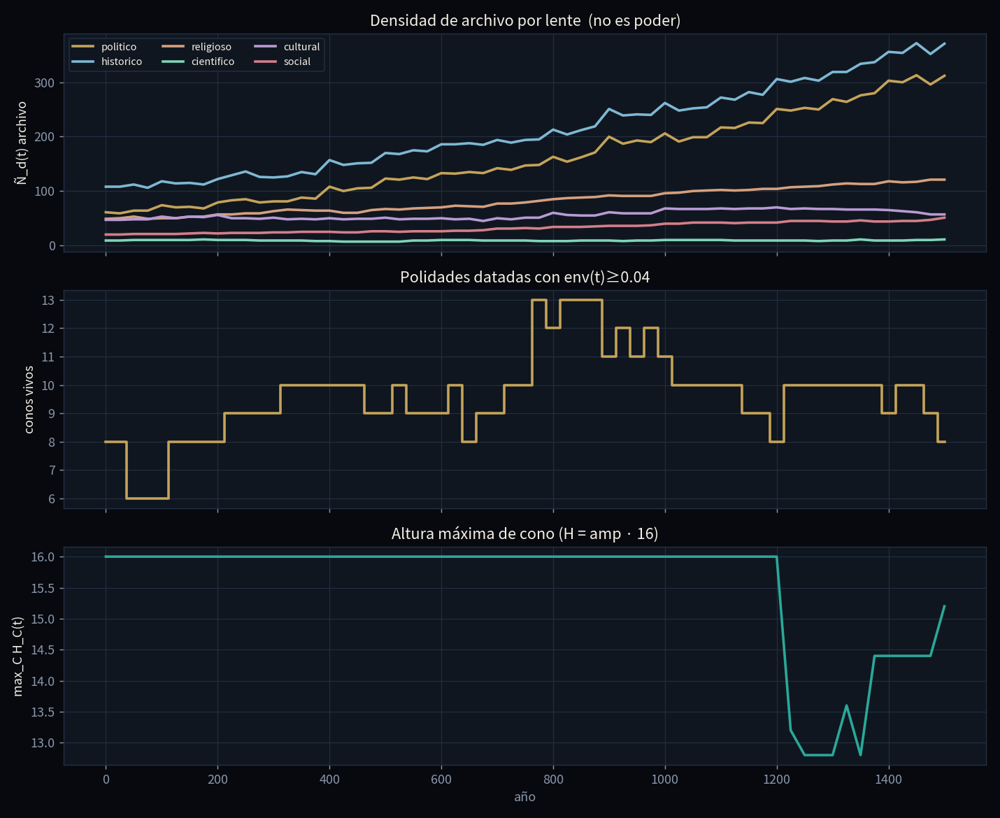
La sábana Φ en tres instantes:
mientras las lámparas se encienden y apagan, el relieve cambia, pero el
mapa subyacente de regiones permanece.
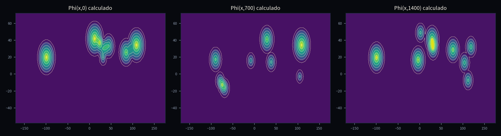
Arriba, las seis lentes como densidades independientes (no son poder).
Abajo, los conos vivos y la altura máxima del cono dominante en cada
año.
Un viaje por capas
Empezamos con los orígenes de la especie, donde aún no hay conos de
Estado: hay migraciones, sitios, tecnocomplejos y ADMIXTURE. Luego
vienen las primeras lámparas del neolítico, la red de ejes antiguos, la
tela de encuentros del mundo postclásico y, finalmente, la aceleración
del siglo XVI al XXI. En cada parada usaremos las mismas herramientas:
el interruptor env, el cono zC, la sábana
Φ, la tabla de transferencia
At y el
movimiento medido por W1.
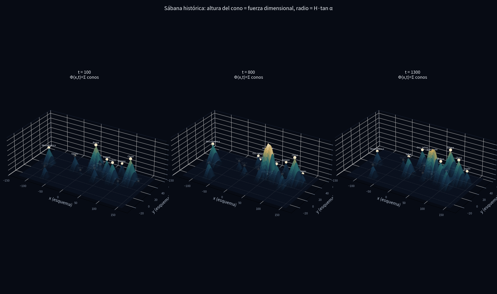
Conos de luz en un modelo topográfico: cada pico es una polidad viva en
un intervalo [t0, t1].
Convenciones del documento
Los años son enteros astronómicos: negativos para a.C., positivos
para d.C.
Una polidad C vive en un
intervalo cerrado I(C) = [t0, t1]
y en un soporte regional σ(C).
φ(C) ⊆ D
es el conjunto de lentes bajo los cuales se puede leer el nodo.
Anu es
un escenario, nunca una predicción.
No existe una métrica escalar canónica de “cercanía histórica”: solo
el vector (dT, dR, dD).
A continuación: el abecedario simbólico, las diez ecuaciones y,
después, el ensayo y la guía visual que relacionan los números con
eventos reales.
No son cinco modelos. Es un solo objeto. Cada ecuación se lee aquí
dos veces: primero qué calcula, después qué hecho de la
humanidad está archivando. Sin ese segundo paso la fórmula es un
aparato vacío.
Léelo como el vocabulario de un idioma. Si una fórmula más abajo te
traba, vuelve aquí.
Símbolo
Se lee
Qué mide, en una frase
Unidades / tipo
v
uve, “el hecho”
Una ficha del archivo: dinastía, batalla, texto, yacimiento.
objeto
I(v)=[t0,t1]
intervalo de uve
Desde qué año hasta qué año esa ficha está “encendida”.
años (enteros)
t0
te sub cero
Año de encendido. Incluido.
año
t1
te sub uno
Año de apagado. Incluido.
año
t
te
El año que estamos mirando ahora.
año
σ(v)
sigma de uve
En qué regiones del mapa de 16 vive el hecho.
conjunto
R
erre
El mapa de 16 regiones + “humanidad”. No es la Tierra continua.
grafo
T
te mayúscula
El eje del tiempo. En el fibrado son años enteros ℤ.
años
D
de
Las 6 lentes: político, histórico, religioso, científico, cultural,
social.
conjunto de 6
φ(v)
fi de uve
Qué lentes leen ese hecho. Puede ser más de una.
subconjunto de D
C
ce, “la civilización”
No es un nodo. Es una ventana en el mapa × tiempo más un manojo de
fichas.
par (WC,FC)
WC
uve de ce
El rectángulo “estas regiones, entre estos años”.
región × tiempo
FC
efe de ce
El manojo de fichas que pertenecen a esa civilización.
conjunto de nodos
FC(d)
efe de ce en lente de
Solo las fichas de C que se ven con la
lente d.
conjunto
d
de minúscula
Una lente concreta. Ejemplo: d=
religioso.
elemento de D
M
eme
La Tierra continua (longitud, latitud). El mantel de la mesa.
esfera / plano
x
equis
Un punto del mantel. Un lugar.
(lon, lat)
cC
ce de ce
La capital / centro del cono. Donde está la lámpara.
(lon, lat)
env(t)
sobre
Qué tan encendida está la lámpara en el año t. 0 = off, 1 = full.
número 0…1
amp(t)
amplitud
Brillo ese año: pico × sobre. Si baja de 0.04, la apagamos del
dibujo.
0…1
peak
pico
Brillo máximo que ese cono puede alcanzar (dato del JSON).
0…1
H
hache, altura
Qué tan alta es la lámpara ese año. H=amp·
Hmax.
unidades de mapa
Hmax
hache máx
Tope de altura. Aquí vale 16. Es una constante, no un
descubrimiento.
16
RC
radio
Hasta dónde llega el círculo de luz. RC=Htanα.
grados en el mapa
α
alfa
Ángulo de la lámpara. Aquí 52°. Más alfa = círculo más ancho para la
misma altura.
grados
zC(x,t)
zeta de ce
Cuánta luz de esa lámpara hay en el lugar x
el año t.
número ≥ 0
Φ(x,t)
fi mayúscula
Suma de todas las luces en x ese año. La
sábana.
número ≥ 0
Φ_∨
fi vee
La luz más alta en ese punto (quién manda), no la suma.
número ≥ 0
γc
gamma
Curva de nivel: la línea donde Φ=c. Como
una isohips.
curva
sC,d(t)
ese
Cuántas fichas de la civilización C en la
lente d están vivas el año t.
conteo / masa
|s|p
norma pe
Cómo juntas las 6 lentes en un solo brillo. p=1,2,∈fty son políticas distintas.
número
dT
de te
Separación en años entre dos intervalos. 0 si se cortan.
años
dR
de erre
Saltos en el mapa de 16 regiones. 0 = misma región.
enteros 0,1,2,3
dD
de de
0 si comparten al menos una lente; 1 si no.
0 o 1
e
acople
Un puerto fichado: dos civilizaciones se tocan con un tipo y un
intervalo.
objeto
At
a sub te
Tabla “quién le pasa tinta a quién” en una ventana de años.
matriz 22×22
ρ(A)
ro
Radio espectral. Si es < 1, sin fuentes nuevas la copia se
apaga.
número
δ
delta
Olvido institucional: qué fracción de tinta se pierde cada
paso.
0…1
w(tipo)
uve de tipo
Peso del acople (comercio ≠ conquista). Viene de SPEC_04, no se
inventa.
número
W1
wasserstein uno
Cuánta masa hay que mover en el mapa para pasar de un año al
siguiente.
grados × masa
β0(t)
beta cero
Cuántos “islotes” de luz hay ese año. Baja cuando dos círculos se
tocan.
entero
πC,d
pi
Fracción de la tinta de C que es de la
lente d.
0…1
K
ka, núcleo
Cómo cae la luz al alejarte del centro. El cono usa un
triángulo.
función
Ecuación 0 — Cómo se guarda
un hecho
v ↦ ( I(v), σ(v), φ(v) ) ∈ ℐ(ℤ) ×
2R × 2Dun hecho se guarda
como intervalo + regiones + lentes
En cristiano: cada ficha se traduce a tres cosas:
cuándo vive, dónde vive, con qué lentes se lee. La flecha no “calcula el
futuro”. Solo archiva.
Cada pedazo
Pedazo
Qué es
Ejemplo Teotihuacan
v
la ficha
la ciudad-Estado Teotihuacan
longmapsto
“se traduce a”
no es una predicción
I(v)=[t0,t1]
años de vida
[−100, 650]
ℐ(ℤ)
la familia de todos los intervalos de años enteros
el estante de los “desde–hasta”
σ(v)
regiones
{meso}
2R
cualquier subconjunto del mapa de 16
puede ser una región o varias
φ(v)
lentes
{histórico, político, cultural}
2D
cualquier subconjunto de las 6 lentes
nunca se obliga a una sola
ℤ son los enteros: … −2, −1, 0, 1, 2 … El
modelo usa el año 0. −44 = 44 a.C.
Una civilización no es un hecho. Es un par:
C = (WC, FC) WC = σC ×
[tCmin, tCmax] ⊂ R × T civilización = ventana en el mapa-tiempo + manojo de
fichas
Símbolo
Frase
WC
el rectángulo “estas regiones, entre el primer y el último año de
C”
σC
las regiones donde C tiene soporte
tCmin,
tCmax
el año más temprano y el más tardío de sus fichas
⊂
“está dentro de”
R× T
el producto: cada casilla es (región, año)
FC
las fichas concretas que cuelgan de C
Qué no es:WC no
es un imperio eterno. Si C = Teotihuacan, tmax=650. En 700 el rectángulo ya no cubre
esa lámpara.
Qué pasó en la historia
En el valle de México no hay “una Mesoamérica eterna”. Hay lámparas
sucesivas. Teotihuacan enciende hacia el −100, concentra población,
murales y una avenida de los muertos, y se apaga hacia el 650 (incendio
del centro, diáspora). Tula (900–1150) es otra lámpara. Tenochtitlan
(1325–1521) es otra. El mapeo v ↦ (I, σ, φ) obliga a no fundirlas en un
solo “imperio azteca desde siempre”.
Lo mismo vale fuera de Mesoamérica. Menfis/Egipto dinástico no es el
Egipto fatimí. Chang’an de los Han no es Beijing de los Qing. Roma
republicana no es el Vaticano. Cada ficha trae su intervalo, su región y
sus lentes. Si el archivo no da fechas, el modelo no inventa un
cono.
Ecuación 1 — El interruptor
(envelope)
Una ciudad no aparece de golpe ni se evapora en un 31 de diciembre.
El modelo pone una rampa de 40 años a cada lado.
env(t; t0, t1) =
0si t < t0 o t > t1
(fuera: apagada) (t − t0) / 40si
t0 ≤ t < t0+40 (subida) 1si
t0+40 ≤ t ≤ t1−40 (meseta) (t1
− t) / 40si t1−40 < t ≤ t1
(bajada)
40 es la rampa en años. En t=700, Teotihuacan
(−100…650) da env=0.
En cristiano: fuera del intervalo, cero. En los
primeros 40 años, sube en línea recta de 0 a 1. En el medio, 1. En los
últimos 40, baja de 1 a 0.
Variables
Símbolo
Significado
Número en Teotihuacan
t
el año que preguntas
tú lo eliges
t0
enciende
−100
t1
apaga
650
40
años de rampa (constante del modelo)
40
(t-t0)/40
fracción de la subida
en t=−60 → 40/40 = 1
(t1-t)/40
fracción de la bajada
en t=630 → 20/40 = 0.5
Cuentas hechas
t
env
Por qué
−200
0
antes de nacer
−80
(−80−(−100))/40 = 0.5
a mitad de la subida
200
1
meseta
630
(650−630)/40 = 0.5
a mitad de la bajada
700
0
ya murió. No hay excepción “cultural”
Qué no es: no es una opinión sobre si “Teotihuacan
influyó después”. Es un interruptor. La influencia posterior, si existe,
tiene que ser otro acople con su propio Ie.
Qué pasó en la historia
Hacia el 200 d.C. Teotihuacan está en meseta: env = 1. Hay
talud-tablero en Tikal, obsidiana verde en el Petén, embajadas pintadas
en el mural de los “tassel headdress”. Eso no es “Teotihuacan eterno”:
es la lámpara a pleno y un acople fichado con el Maya clásico.
Hacia el 550–650 el centro se quema. El modelo no discute si fue
revuelta interna o sequía: baja la rampa. En el 630 env = 0.5. En el 700
env = 0. Quien hable de “influencia teotihuacana en Tula” tiene que
abrir otro acople (900–1150), no alargar esta lámpara.
El mismo interruptor apaga Roma de Occidente en 476, Bagdad abasí en
1258, Tenochtitlan en 1521. La cultura que queda (latín, islamicate,
náhuatl) vive en otras fichas, otras lentes, no en el cono político que
ya murió.
Laboratorio
200Teotihuacan
−100…650
Ecuación 2 — Tres reglas, no
una
dist(u, v) = ( dT(u,v), dR(u,v),
dD(u,v) ) tres números, no uno. Tiempo,
mapa, lente.
En cristiano: para decir “qué tan cerca están dos
fichas” no usamos un solo número. Usamos tres: tiempo, mapa, lente.
Mezclarlos en una suma es una decisión política, no un teorema.
2a. Distancia en tiempo
dT(u, v) =
0si los intervalos se cortan (hay un año en común)
b0 − a1si u acaba antes de que
empiece v a0 − b1si v acaba antes
de que empiece u
Teotihuacan vs Tenochtitlan: 1325 − 650 = 675
años.
Símbolo
Significado
u,v
dos fichas
[a0,a1]
intervalo de u
[b0,b1]
intervalo de v
“se cortan”
hay al menos un año en común: no (a1<b0 o b1<a0)
Ejemplo: Teotihuacan [−100, 650] y Tikal [200, 900] se cortan → dT=0. Teotihuacan y Tenochtitlan [1325,
1521] → dT=1325-650=675 años de
hueco.
2b. Distancia en el mapa de
16
dR(ru, rv) = número mínimo de saltos
de vecino a vecino meso → andes = 1. No son
kilómetros.
ru = región de la primera ficha.
Vecinos (BFS): meso toca am-north y andes, so dR(meso,andes)=1. Andes a Irán-estepa son
varios saltos. Si una ficha es de la fila transversal
humanidad, dR=1 por
convenio (está “al lado de todas” sin ser un lugar).
Qué no es: no son kilómetros. dR no sustituye la distancia sobre la
esfera M.
2c. Distancia de lente
dD(φ, ψ) =
0si φ ∩ ψ no está vacío (comparten al menos una
lente) 1si no comparten ninguna lente
φ∩psi = las lentes que las dos fichas tienen
en común. Un tratado (histórico) y una dinastía (político+histórico) dan
dD=0. Un rito (religioso) y un paper
de clima (científico) dan dD=1.
2d. La suma
que el modelo se niega a hacer por ti
α · dT + β · dR + γ · dDsolo si tú entregas α, β, γ. El modelo no elige esos
pesos.
Peso
Qué estás diciendo si lo subes
α
“me importa más que no se solapen en el tiempo”
β
“me importa más que sean vecinos en el mapa”
γ
“me importa más que hablen la misma lente”
Seshat, al usar mathbf{1}top s
(sumar las 6 lentes), elige α,β,γ sin
declararlos. Aquí hay que declararlos. Eso es el
teorema.
2e. Juntar las 6 lentes: la
norma p
H = ‖s‖p =
|s1| + … + |s6|si p = 1
(suma: estilo Seshat) √(s1² + … +
s6²)si p = 2 (default del cono)
max{s1, …, s6}si p = ∞ (manda la
lente más llena)
s=(spol,shist,srel,scie,scul,ssoc).
Cada sd es tinta de una lente.
p=1: “cuenta todo”. Es el PC1 de
Seshat.
p=2: compromiso (default del cono).
p=∈fty: “solo manda la lente más
llena”.
Publicar p es publicar una política. El
modelo default usa p=2.
Qué pasó en la historia
Tiempo. Teotihuacan y Tikal conviven dos siglos (d_T
= 0): hay contacto posible. Teotihuacan y Tenochtitlan no: 675 años de
hueco. Quien las sume en “una sola civilización mexicana” está mintiendo
al intervalo. Roma y Han también tienen d_T = 0 (siglo I–II) pero eso no
prueba embajadas: solo que el reloj las deja hablar.
Mapa. Meso y Andes son vecinas (d_R = 1). Eso
autoriza a preguntar por cacao, Spondylus y metalurgia; no autoriza a
inventar un imperio. Andes e Irán-estepa están a varios saltos: la ruta
de la plata potosina al siglo XVI llega por el Atlántico, no por un
vecino inmediato del grafo prehispánico.
Lente. Un tratado de Kadesh (histórico + político) y
una dinastía hitita (político) dan d_D = 0. Un rito andino y un tratado
de Utrecht no. Mezclar “todo lo que parece importante” en un solo número
es exactamente lo que Seshat hace con el PC1 y lo que este modelo se
niega a hacer sin declarar pesos.
Ecuación 3 — La
lámpara (cono) y el mantel (sábana)
Primero el brillo de ese año, luego la altura, luego el radio, luego
la luz en cada punto.
amp(t) = peak × env(t; t0, t1)
H(t) = amp(t) × Hmax con Hmax = 16
R(t) = max( 5.5 , H(t) · tan α ) con α = 52°
si amp < 0.04 el cono no se dibuja. tan(52°) ≈
1.28 → si amp=1, R ≈ 20.5°
Símbolo
Frase de bachillerato
Valor aquí
peak
qué tan potente puede llegar a ser esa lámpara
dato del JSON, 0…1
amp(t)
brillo efectivo ese año
peak × env
umbral 0.04
si amp < 0.04 no la dibujamos (ruido)
0.04
Hmax
tope de altura, para que el mapa no explote
16
tanα
cuánto se abre el cono. tan(52°) ≈ 1.28
1.28
5.5
radio mínimo, para que un cono enano no sea un punto
5.5°
Ejemplo: peak = 1, t en la meseta → amp = 1 → H = 16 → R ≈ 16 × 1.28
= 20.5°. Un círculo de unos 20 grados de mapa.
Luz en un punto
zC(x, t) = HC(t) · max( 0 , 1 − dist(x,
cC) / RC(t) ) en el centro
vale H. En el borde vale 0. Fuera vale 0.
En cristiano: en el centro vale H. A mitad de camino al borde vale H/2. Fuera del círculo vale 0. Es un toldo
triangular, no una campana gaussiana.
Símbolo
Significado
x=(lon,lat)
el punto del mantel donde preguntas “¿cuánta luz hay?”
cC
coordenadas de la capital
dist(x,cC)
en el código: distancia euclidiana en grados √{(Deltalon)2+(Deltalat)2}
max(0,·)
si el paréntesis sale negativo (fuera del círculo), recorta a 0
Si estás justo en el borde, dist = R, entonces 1-1=0, luz cero. Un paso más adentro, luz chica. En
el centro, dist = 0, z=H.
El mantel entero
Φ(x, t) = suma de todas las zC(x, t) (interferencia,
ℓ¹)
Φ∨(x, t) = la zC más alta en ese punto (quién manda,
ℓ∞)
donde dos luces se montan, Φ es un puerto. El
collado es donde z_C = z_C′.
ΣC = suma sobre todas las
lámparas encendidas ese año. Donde dos círculos se montan, Φ es más alta que cada una: eso es un
puerto.
maxC no suma: se queda con la más
alta. Sirve para pintar cuencas (“esto es territorio de C”).
El collado entre C y C′ es el punto del segmento que une las dos
capitales donde zC=zC’.
Cuatro nombres para lo mismo: collado, puerto, acople, entrada de At.
Wolters (más de un señor en un lugar) pide Φ. Westfalia (un soberano por territorio) pediría una
partición. El modelo elige cubierta.
Mandala: la misma familia,
otro núcleo
φC,d(x, t) = a(t) · K( distg(x, c(t)) / r(t) )
K = cómo cae la luz. El cono usa K(ρ) = max(0,
1−ρ).
Símbolo
Significado
a(t)
amplitud ese año (el mismo papel que amp)
distg
distancia geodésica sobre la Tierra (no dR)
r(t)
radio del campo ese año
K(ρ)
cómo cae la luz: gaussiana e-ρ2, exponencial e-ρ, o Cauchy 1/(1+ρ2)
El cono es el caso K(ρ)=max(0,1-ρ): un
triángulo de soporte compacto (Epanechnikov en 1D). Misma familia, otra
tinta.
Qué pasó en la historia
En el año 100 la sábana tiene lámparas en Roma, en Luoyang, en
Teotihuacan, en Aksum. Los círculos no se tocan entre Mesoamérica y el
Mediterráneo: Φ allí es la suma de cero con cero. El collado que sí
existe es el del Cercano Oriente — Levante entre Egipto y Mesopotamia —,
puerto viejo de caravanas y tratados.
En el 700 Teotihuacan ya no está. En su lugar el mantel mesoamericano
se ha hundido; Tikal sigue un rato. En Eurasia el collado se corre: de
Hélade al mundo islamicate. Bagdad, Damasco, Córdoba no son “la misma
lámpara romana”: son otras capitales, otro peak, otro radio.
En 1400 hay collados Tenochtitlan–Mixteca, Mali–Magreb,
Yuan/Ming–Corea. El puerto no es una metáfora: es el lugar del mapa
donde dos Estados pueden cobrarse peaje o intercambiar embajadores. Φ
suma (Wolters: más de un señor). Φ∨ pinta quién manda en esa
casilla.
Ecuación 4 — La tinta
s y cómo se mueve
sC,d(t) ∝ número de fichas de C en la lente d que están
vivas en el año t proxy de archivo, no “el
poder”.
En cristiano: cuenta cuántas fichas de la
civilización C, leídas con la lente d, están vivas el año t. Esa cuenta
es un proxy de archivo, no “el poder”.
Símbolo
Frase
#
“cuántos hay” (cardinal)
FC(d)
fichas de C en la lente d
slice(t)
fichas cuyo intervalo cubre el año t
∝
“proporcional a”: se puede reescalar
Si mañana medimos monedas en vez de crónicas, cambia s. No hay que redibujar la forma de z ni de Φ: se enchufa el
nuevo s.
sC(t+Δ) = env(t) · [ (1−δ) sC(t) + suma de
acoples vivos w(e) P ssrc(t) + bC(t) ] δ = olvido. Si env=0, todo vale 0.
Símbolo
Frase de bachillerato
t+Delta
el año siguiente (Δ suele ser 1 o 10)
env(t)
si la lámpara está off, todo esto vale 0
(1-δ)sC(t)
lo que C recuerda de sí misma. δ = olvido (instituciones que se
pudren)
Σeni t
suma solo los acoples cuyo intervalo cubre este año
w(e)
peso del tipo (comercio, conquista, traducción…)
Peto C
máscara 6×6: solo mueve las lentes que el acople declara
ssrc
la tinta de la civilización de origen del acople
bC(t)
fuente interna (no todo llega de fuera)
El diagrama conmuta, y eso es lo que hay que memorizar:
FC(d) →(#) sC,d →(‖·‖p)
HC →(tan α) RC →(K) zC →(suma o
máx) Φ cuentas fichas → juntas lentes → altura →
radio → luz → mantel
De izquierda a derecha: cuentas fichas → juntas lentes → obtienes
altura → abres el cono → pintas luz → sumas el mantel.
Qué pasó en la historia
s no es “el poder de Roma”. Es cuántas fichas del archivo están vivas
ese año. Por eso Europa occidental se ve más densa después de 1500: hay
más crónicas, no necesariamente más humanidad. El Sahel medieval (Ghana,
Mali, Songhai) queda más flaco porque el archivo escrito es más corto,
no porque el Níger estuviera vacío.
δ es el olvido institucional. Después de 476 las oficinas de
Occidente dejan de copiarse a sí mismas: (1−δ)s se cae. Lo que sobrevive
viaja por acoples — la Iglesia, el derecho romano en fragmento, el
griego en Bagdad — no por la lámpara “Roma” que ya tiene env = 0.
b_C es lo que una sociedad produce sin pedirlo prestado: el
calendario maya, el hierro nok, el Quipu. Sin b_C la matriz A solo
reparte tinta vieja y, como ρ(A) < 1, se apaga.
Ecuación 5 — La
tabla de quién copia a quién
A[destino, origen] += w(tipo) si el acople está vivo en esa
ventana matriz rala 22×22. ρ(A) < 1 en las cuatro
ventanas medidas.
En cristiano: si en esa ventana de siglos hay un
acople fichado de “from” hacia “to”, suma su peso en esa casilla. La
matriz queda rala a propósito: 39 acoples, no 231.
Símbolo
Significado
to, from
filas = quien recibe; columnas = quien emite
+!=
“súmale a lo que ya había” (puede haber varios acoples)
Ie
intervalo de vigencia del acople
ventana
el tramo que estás midiendo, p. ej. 800…1200
≠varnothing
“se cortan”: el acople está vivo en esa ventana
ρ(A) = el número que más crece cuando
aplicas A una y otra vez. En las cuatro ventanas medidas es 0.36, 0.15,
0.26, 0.32: todos < 1. Sin fuentes bC, la transferencia se apaga. Coherente
con δ.
Qué no es:An u
no es el año 2100. Es un escenario: “si esta tabla no se rompe”. 476,
650, 1258, 1492 la rompen.
Qué pasó en la historia
Las cuatro ventanas del espectro no son un adorno. Nombran la ruta
que el archivo sí sostiene:
−500…200 (ρ = 0.36): Hélade, India, Egipto. El Mediterráneo y el
Índico ya se copian — monedas, Buda helenístico, papiro, monsoon trade.
No hay puente con Mesoamérica.
200…650 (ρ = 0.15): la copia se enfría. Cae Occidente romano, se
apaga Teotihuacan, entra el islamicate y Aksum. ρ bajo = la red está
rota; hace falta fuente nueva (b_C) para que algo vuelva a crecer.
800…1200 (ρ = 0.26): islamicate, Sahel, India. Oro de Bambuk, sal de
Taghaza, manuscritos de Tombuctú, cifras índicas en Córdoba. Esa es
tinta que sí cruza el Sahara.
1500…1750 (ρ = 0.32): Sahel, Atlántico, islamicate. Aquí sí entra
América: plata de Potosí, galeón de Manila, trata atlántica. 1492 no
“une el mundo” en el modelo: abre acoples nuevos con su propio I_e. Aⁿu
no predice 2100; 1258 (Bagdad) y 1521 (Tenochtitlan) ya demostraron que
la tabla se rompe.
W1(μt, μt+Δ) = coste mínimo de
barrer esa arena al año siguiente
no es W₁ de la sábana continua; es el de las
capitales.
Símbolo
Frase
δcC
un grano de masa sentado en la capital de C (no es la delta de
olvido)
aC(t)
cuánto pesa ese grano ese año
μt
la distribución: todos los granos, normalizados para que sumen
1
W1
“si la masa fuera arena, cuántos grados-masa cuesta barrerla hasta
la disposición del año siguiente”
Esto no es W1 de
la sábana continua Φ dx. Es el de sus átomos
(capitales). Más barato de calcular; menos fiel al relieve.
Picos medidos: 1337, 1965, 1955, −1850, 987, 1262. El de −1850 es
artefacto: con 2 o 3 granos, nacer un cono en otro continente mueve
mucha masa.
Ecuación 7 — Seis sábanas, no
una
Φd(x, t) = suma πC,d · zC(x, t)
con πC,d = nC,d /
(nC,1+…+nC,6) fracción de
tinta de esa lente. Hoy el radio es el mismo para las 6.
Símbolo
Significado
nC,d
número de fichas de C en la lente d
|nC|1
suma de fichas de C en las 6 lentes
πC,d
qué fracción de la tinta de C es de esa lente (suma 1)
Φd
el mantel pintado solo con esa lente
Hoy todas las sábanas comparten el mismo radio RC=Htanα. Por eso en t=1000 se parecen.
SPEC_04 pide un radio por lente rd(t). Esta ecuación mide el hueco: masa
distinta, forma igual.
Masas de malla en t=1000: hist 5409, pol 3756, cul 284, rel 184, cie
145, soc 61. Tinta, no importancia.
Qué pasó en la historia
W₁. El mantel se reacomoda de golpe cuando nace o
muere una capital pesada. 987 (Song / fatimíes / toltecas tardíos), 1262
(cerca de 1258: Bagdad mongola, Delhi, el umbral de Tenochtitlan), 1337
(Yuan, Mali en su apogeo, auge mexica). 1950–65 es mallado moderno, no
“el pico de la humanidad”.
El pico de −1850 es trampa de archivo: con dos o tres conos
encendidos, nacer uno en otro continente mueve mucha masa relativa. No
es “la civilización explota en el II milenio a.C.”.
Seis sábanas en t = 1000. El año 1000 no es un auge
místico. Es un corte: Califato (en fragmento), Song, Chola, Ghana/Mali
naciente, tolteca, Europa otomana aún no. Lo que el archivo llena es
político + histórico. Lo religioso vive sobre todo en la fila
transversal (islam, cristiandad, budismo viajero). Lo cultural se ve más
en Andes y Meso de lo que el PC1 europeo esperaría. Lo social se
enciende tarde, cuando el archivo empieza a hablar de gremios, castas y
esclavitud con ficha propia.
Ecuación 8
— El PC1 (por qué no colapsamos a un número)
PC1 ≈ 0.59·político + 0.81·histórico (98.8 % de la varianza)
r = correlación. 1 = se mueven juntas. 0 = no
tienen nada que ver.
r = correlación de Pearson: 1 = se mueven
juntas, 0 = no tienen nada que ver, −1 = una sube cuando la otra
baja.
Político e histórico casi son la misma columna de tinta (dinastía +
acontecimiento). Religioso y cultural son residuales ortogonales: no se
pueden sumar sin borrar lo que el PC1 no ve.
Hélade tiene 0 nodos religiosos en fibra. Andes tiene 36 culturales
frente a 56 políticos. Tratar tilde
Nd(t) como “auge de la humanidad” es el error que el
modelo ya prohibió.
Qué pasó en la historia
Si sumas las seis lentes, “gana” quien tiene más dinastías y batallas
fichadas. Por eso el PC1 parece Europa + China + Islamicate. No es que
los Andes no importen: es que su tinta está en cultural (36 nodos frente
a 56 políticos) y el PC1 no la ve.
Hélade, en este archivo, tiene 0 nodos religiosos en fibra. Eso no
dice que los griegos no tuvieran templos. Dice que el handbook que
alimentó la fibra etiquetó otra cosa. Un historiador que use solo PC1
declarará “auge clásico laico”. El modelo enseña el sesgo, no lo
bendice.
Religioso y cultural casi no correlacionan (r ≈ 0.01). El islamicate
no es “lo mismo que Bagdad político”. El Tawantinsuyu no es “lo mismo
que el Qhapaq Ñan cultural”. Colapsar a un número borra justo las dos
residuales que distinguen una sociedad de un Estado.
Ecuación 9 —
Orígenes: mismo mapeo, cono prohibido
origen = (soporte de sapiens) ∩ (pulsos con descendencia) ∩ (paquetes
que llegan al Holoceno) las tres a la vez. Un fósil
solo no enciende lámpara de Estado.
∩ = intersección: las tres condiciones a la
vez. Un erectus en Dmanisi tiene I,σ,φ
y distancias. No entra en Φ. Geométricamente es
un filtro, no una lámpara.
Beringia = puente climático + modelo genético mayoritario. No
teorema. White Sands, Sahul 65 vs 50 ka, Shangchen 2.1 Ma,
Sahelanthropus: open / debated.
Qué pasó en la historia
Un erectus en Dmanisi (~1.8 Ma) es un hecho: tiene I, región
(Cáucaso / near-east), lente científica. No es un Estado. No enciende Φ.
Shangchen (2.1 Ma, Loess Plateau) y Sahelanthropus siguen
debated: el modelo los archiva y no los promueve a
cono.
América. El puente de Beringia es el modelo genético mayoritario + un
pulso climático. No es un teorema del fibrado. White Sands (Nuevo
México, huellas ~21–23 ka) y los sitios pre-Clovis están
open. El archivo no autoriza a decir “se pobló en X año por
el estrecho” como si env se hubiera puesto a 1. Autoriza a decir: hay
soporte de sapiens, hay pulsos con descendencia, y el paquete Holoceno
(agricultura, cerámica, aldeas) llega tarde y por varias vías.
Sahul (Australia–Nueva Guinea) tiene fecha alta (~65 ka) y fecha baja
(~50 ka). Mientras las dos convivan en el catálogo, origen no colapsa a
un solo t₀. Esa es la honestidad del filtro.
Laboratorios — mueve las
variables
Cada caja es una ecuación. Los números que salen son los del modelo
(rampa 40, α=52°, Hmax=16, umbral 0.04). No predicen el
futuro.
Lab 1 · Envelope env(t; t₀, t₁)
Elige nacimiento y muerte. El trapecio es la lámpara. La línea de oro
es el año t.
*En el toy la tercera fila es Atlántico. ρ se estima con 12
iteraciones de potencia.
Lab 10 · W₁ de dos capitales
Dos granos de arena. W₁ en 1D es |x₁−x₂| · masa que hay que mover.
Aquí la masa que viaja es min(a, 1−a) si solo hay dos puntos… más
simple: W₁ = |c₁−c₂| · |p−q| donde p,q son pesos normalizados del año t
y t+Δ.
capital A20capital B80peso A en
t0.70peso A en
t+Δ0.30
Lab 11 · π_d = n_d /
(n_pol+…+n_soc) y Φ_d = π_d z
Seis conteos. La barra es la fracción. Hoy el radio es el mismo; solo
cambia la masa.
Lab 12 · Origen =
tres conjuntos ∩ (no es un cono)
Marca las tres condiciones. Solo si las tres están on hay “origen”.
Un fósil solo no enciende lámpara.
soporte de sapiens
pulsos con descendencia
paquetes que llegan al Holoceno
Las siete
gráficas, con los ejes dichos en voz alta
Misma métrica, mismo envelope, mismos pesos. No se inventó ningún
cono.
1. Morse / nervio — qué es cada
eje
Cada panel es un año fijo (100, 700, 1400). Los puntos = capitales
con amp ≥ 0.04. Las aristas = círculos que se tocan. El panel β0(t) tiene en horizontal el año y en
vertical cuántos islotes quedan.
t
picos
collados
100
9
6
700
11
5
1400
9
3
Morse Reeb
Teotihuacan no está en t=700. env(700;−100,650)=0.
2. Persistencia — qué es cada
barra
Horizontal = años. Cada barra es un cono. Nace cuando peak·env cruza
0.04; muere cuando baja de 0.04. Mediana 394 años. Menfis 3026 es un
corte demasiado largo del JSON, no un milagro.
Persistencia
3. Espectro de A_t — qué es
cada número
ventana
acoples vivos
ρ(A) = “¿crece sola la copia?”
quién carga el autovector
−500…200
9
0.36
Hélade, India, Egipto
200…650
10
0.15
islamicate, Levante, Aksum
800…1200
8
0.26
islamicate, Sahel, India
1500…1750
10
0.32
Sahel, Atlántico, islamicate
Espectro
4. W₁ — eje vertical =
velocidad de barrido
Horizontal = año. Vertical = W₁ / Δt. Pico = el mantel se reacomoda
de golpe. 1200–1350: Tenochtitlan / Delhi / Yuan. 1950–65: mallado denso
moderno.
W1
5.
Allen — cada casilla es un tipo de “cómo se tocan dos vidas”
6. Seis sábanas
en t=1000 — color = Φ_d, no “importancia”
Seis sabanas
7.
Rejilla R×T×D — fila = región, columna = bin de 200 años, tinta =
incidencias
Religioso y científico viven en la fila transversal. Cultural en
Andes/Meso. Social tarde en Europa occidental y América del Norte.
Oscurecer hacia 2000 = sesgo de archivo.
RTD
Un hecho, todas las
ecuaciones
v = Teotihuacan. I = [−100, 650], σ = {meso}, φ =
{histórico, político, cultural}.
env(200) = 1: la ciudad está en meseta; hay talud-tablero en el
Petén. env(700) = 0: el centro ya se quemó; Tula aún no enciende.
Frente a Tikal: d_T = 0, d_R = 0, d_D = 0 en histórico. Convivencia
y acople posible (embajadas, obsidiana verde).
Frente a Tenochtitlan: d_T = 675, d_R = 0. Misma cuenca, otra
lámpara. Los mexicas heredan un paisaje, no un interruptor
encendido.
amp(200) = peak · 1 → H = 16 peak → R ≈ 20.5°. En la Pirámide del
Sol z = H. A 20° de mapa, z = 0: el toldo no llega a Cajamarca ni a
Tenochtitlan futura.
El acople con el Maya clásico entra en A_t solo mientras t esté en
I_e. En 700 esa casilla ya no se carga con Teotihuacan.
s político(200) cuenta fichas políticas vivas, no “el poder”. Si
mañana entra un censo de barrios, cambia s; no cambia que env(700) =
0.
Lo que el modelo no deja decir
No deja decir que “los aztecas son Teotihuacan”. No deja decir que
América se pobló “en el año del estrecho” como si hubiera un cono de
Estado en el Pleistoceno. No deja decir que 2000 d.C. es el auge de la
humanidad porque el archivo se oscurece de tanto papel. Deja decir, con
números, dónde dos sociedades pudieron tocarse y dónde el reloj o el
mapa se lo impiden.
Cada símbolo de esta página está definido. Si uno no lo está, es un
error del documento, no del modelo. 2302 / 2528 / 81 · α=52° · rampa 40
· umbral 0.04 · Aⁿu = escenario.
MODELO MATEMÁTICO DE LA HUMANIDAD
El relieve de la historia
Civilizaciones, geografías, dependencias e
intersecciones
Ensayo largo de síntesis historiográfica. Segunda redacción, ampliada
civilización por civilización, a partir del corpus v6.3–v7.2 y de siete
cortes empíricos.
31 de agosto de 2026 · documento de trabajo
Resumen
Este ensayo lee un archivo mundial que no está organizado como
crónica única. Reúne 2 296 nodos cronológicos, 2 522 fichas ontológicas,
22 secciones civilizatorias, 39 acoples tipados y 81 conos de polidades
datadas, de Uruk, Menfis y Caral hasta 2026.1 La
tesis es una sola: la historia humana no avanza por un tronco. En un
mismo año conviven dinastías, ritos, técnicas y regímenes de trabajo que
no se subsumen. Quien los aplasta en un índice de «complejidad» gana un
gráfico y pierde el objeto.
La primera redacción de este texto ofrecía el argumento y las siete
láminas. Esta segunda lo desarrolla como se desarrolla un handbook: cada
sección civilizatoria tiene geografía, intervalo, fibras, conos
encendidos, acoples de entrada y de salida, dependencias y huecos. El
lector debe poder seguir el Nilo, el monzón, el Altiplano o el Sahel sin
que el modelo le robe los nombres.
Las siete figuras no son adorno. Cada una responde a una pregunta de
historiador. ¿Quién está vivo a la vez? ¿Cuánto dura un poder con fecha?
¿Por dónde viaja lo que viaja? ¿Cuándo se mueve el mapa? ¿Los vecinos se
relevos o se montan? ¿El año mil pesa igual en lo sagrado y en lo
fiscal? ¿Qué regiones encienden qué lentes y en qué siglos? El ensayo
enseña a leerlas, una por una, y luego vuelve a ellas desde cada
civilización.
Palabras clave: historia mundial; simultaneidad;
civilización como sección; mandala; lentes; orígenes de la especie;
acople; puerto; sesgo de archivo.
Índice
I. El problema que un árbol no resuelve
La forma más cómoda de contar la humanidad es un tronco con ramas.
Egipto engendra a Roma, Roma al Occidente, el Occidente al mundo. Esa
genealogía es pedagógicamente eficaz y empíricamente falsa. En el año
100 de nuestra era Teotihuacan levanta su cuenca en el Altiplano, Roma
administra el Mediterráneo, Meroe sostiene el Nilo medio, Ctesifonte
hereda el Irán, Pataliputra y Chang’an organizan otros dos mundos.
Ninguna de esas polidades es hija de las otras. Son contemporáneas. Un
árbol obliga a elegir una sola relación de inclusión. La historia no
elige.
El archivo que aquí se interpreta nació para no elegir. Guarda el
hecho una vez y lo corta por varias lecturas. Llamamos a esas lecturas
lentes. La histórica pregunta qué ocurrió según fuente pública. La
científica pregunta qué data el radiocarbono, el genoma o la filología.
La religiosa pregunta qué afirma una comunidad sobre lo sagrado. La
cultural pregunta qué formas —texto, rito, estilo, horizonte— se
transmiten. La social pregunta quién organiza a quién. La política
pregunta qué polidad sostiene el territorio. Un mismo viaje, el hajj de
Mansa Musa en 1324–1325, es las cinco cosas a la vez: un rey altera
precios en El Cairo, un pilar del islam se cumple, el oro redistribuye
prestigio saheliano, el Atlas catalán lo pinta, y al-ʿUmarī se discute
como cifra.
Tampoco se trata de disolver la política. El Estado, la dinastía y el
imperio son objetos reales. Lo que se niega es que agoten el paisaje.
Una civilización, en este ensayo, no es un nodo con nombre eterno. Es
una franja de territorio y de siglos —una línea de mundo— más las fibras
que en esa franja se pueden leer. Alejandría no «pertenece» a Egipto o a
la Hélade o a Roma. Es un puerto: el punto donde esas secciones se
tocan.2
Braudel enseñó a mirar el Mediterráneo como duración, no como
batalla.3 Wolters enseñó a mirar el sureste
asiático como mandala: soberanías que se solapan, no particiones
westfalianas. Hodgson enseñó a no llamar «islam» a todo lo que ocurre
bajo dinastías musulmanas.4 Este archivo traduce
esas tres modestias en reglas ejecutables. Un cono de influencia dura
exactamente el intervalo de la polidad. Teotihuacan no está encendida en
el año 700. Tenochtitlan no lo está en el año 100. Mesoamérica no es un
imperio de dos mil años. Quien pinta eso no hace historia mundial: hace
heráldica.
Hay una segunda modestia, igual de dura. No existe una distancia
única que diga cuán cerca están dos hechos. Estar en el mismo siglo no
es estar en el mismo valle. Compartir un rito no es compartir una
frontera. El objeto es un triplete —tiempo, región, lente— y cualquier
suma es una política de la mirada que debe declararse. El ensayo no
corona ganadores.
Qué es este archivo y qué no es
El árbol se declara incompleto a propósito. No incluye cada señorío,
cada mahajanapada menor ni cada aldea con nombre. El nivel de corte es
el de un handbook regional: lo que la Cambridge World History,
la Historia General de África de la UNESCO, el INAH o la
escuela de Rowe y Lumbreras distinguen como unidad.5
Inventar brazos para «cubrir» Oceanía, el Magreb pre-cartaginés o el
centro-sur africano sería una falta de oficio. Donde el taladro aún no
llega, el mapa debe verse pálido.
Eso importa para cada figura. Cuando una lámina muestra pocas cimas
en el año 100 y muchas después de 1500, parte de esa densidad es
historia —hay más polidades documentadas, más capitales, más Estados que
dejan archivo— y parte es el sesgo del propio corpus, taladrado con más
detalle en siglos tardíos. Tratar el recuento de fichas como «auge de la
humanidad» sería el error de especificación más grave que este proyecto
puede cometer.
Debajo de las dinastías hay otra historia, más larga y de otro tipo.
La divergencia del linaje humano, las radiaciones de Hominina, las
salidas de África, la introgresión con arcaicos y el poblamiento de
Sahul, Eurasia y las Américas no son conos de imperio. Son el soporte
geográfico sobre el que después se sientan las civilizaciones. El modelo
pan-africano de sapiens —fósiles en Jebel Irhoud hacia 300 000 años, no
un único Edén oriental— y la idea de dos poblaciones africanas que se
separan y se refundan son el piso operativo.
Las salidas de África no son una flecha. Hay industria en Asia hacia
2,1 millones de años cuya especie sigue abierta; hay erectus en Dmanisi
y en Java; hay sapiens en el Levante mucho antes de 50 000 años cuyos
linajes no son el tronco de los no africanos actuales; hay una
dispersión hacia 60–50 000 que sí deja descendencia; hay mestizaje con
neandertales y denisovanos en ventanas distintas.6789 El
«origen de la historia», si esa frase tiene sentido, es la intersección
de tres conjuntos: el soporte geográfico de nuestra especie, las rutas
que sí dejaron nietos, y los paquetes culturales que llegan al Holoceno.
Quien convierta un taxón en capital comete la falta que el contrato del
proyecto declara inválida.
Conversación con quien ya matematizó la historia
La cliodinámica de Turchin y el banco Seshat midieron cientos de
sociedades y encontraron que una sola dimensión principal organiza buena
parte de la complejidad social.10 Eso no se ignora. Se
traduce. Esa dimensión es una proyección de un vector más rico, no su
reemplazo. Guardar seis componentes y calcular después, si se quiere, la
suma, es lo contrario de fingir que lo religioso-émico no existe porque
correlaciona con el fisco.
Korotayev mostró que la urbanización y la población mundiales
admiten, hasta cierto régimen, una hipérbola de ajuste asombroso.11 Esa hipérbola no es la curva de un
rito ni la de una sábana de influencia. Una singularidad en una fecha
futura es un artefacto del régimen, no un destino. Morris construyó un
índice de energía, organización, guerra e información y advirtió él
mismo que el gráfico «no es correcto»: sirve para ver una forma a
explicar.12 Taagepera midió el área de los
imperios y halló saltos; el radio de nuestros conos es el primo
geométrico de esa área, no su ley.13
Popper sigue valiendo. No hay ley de la historia que declare al
ganador.14 Quien quiera un ganador debe
publicar la norma con la que lo eligió, y el horizonte: a diez años
manda la coerción; a cien, el fisco y la demografía; a quinientos, la
institución; a dos mil, la lengua, la escritura y el rito.
Cómo se mira, sin jerga
Cortar el año. Se pregunta qué polidades, ritos y
textos están vivos en una fecha. El año 700 no contiene a Teotihuacan.
El año 1400 sí contiene a Tenochtitlan, Constantinopla, El Cairo,
Tombuctú, Delhi, Nankín, Angkor y Majapahit. Esa lista no es un ranking.
Es una simultaneidad.
Seguir una fibra. En la franja de Egipto se puede
leer lo político —las dinastías— y, aparte, lo religioso: maat, Osiris,
el atonismo, la Iglesia copta. Mismo suelo, distinta fibra. Un nodo
puede vivir en varias franjas: eso es un puerto, no un error de
clasificación.
Marcar el cruce. Un acople es un cruce datado y
tipado: conquista, tratado, comercio, traducción, diáspora, conversión,
fusión, sucesión, guerra, coexistencia, contacto, expansión. Hay 39. Son
pocos. Esa escasez es un dato: el archivo no pretende que todo influya
sobre todo.
Sobre el mapa, cada polidad datada levanta un cono cuya altura resume
cuántas de esas fibras están llenas y cuyo radio crece con la altura.
Donde dos conos se montan, la sábana sube: ahí está el puerto. Donde uno
se apaga, la curva de nivel se contrae hasta desaparecer. No es que la
ciudad se borre del pasado. Es que deja de levantar el presente. Los
pesos con los que un cruce empuja a otro —más la conquista que la
coexistencia, más la sucesión que el simple contacto— no son datos
arqueológicos. Están declarados como elección de escala. Se pueden
cambiar. Lo que no se puede es inventar el cruce.
II. Siete láminas, leídas en voz alta
Antes de bajar a cada civilización hay que aprender a leer las siete
figuras como se lee un mapa mural en un aula: qué pregunta hace, qué
muestra, qué no muestra, y qué error de lectura está prohibido. Los
números salen del corpus del 31 de agosto de 2026. No se redondean para
que suenen épicos.
Cómo se construyeron, en una página
Las 22 secciones no son continentes. Son soportes: una lista de
regiones del archivo más un intervalo. Egipto vive en el Nilo entre
−4000 y 640. El campo islamicate vive en seis regiones a la vez, desde
622. El sistema atlántico moderno vive en seis regiones desde 1492. Un
nodo entra en la fibra de una sección si su intervalo se solapa con ese
soporte y su región está en la lista —o si es un eje religioso
etiquetado para esa área. Por eso Assur puede caer en más de una sección
según el siglo, y por eso Alejandría es puerto.
Los 81 conos no son las 22 secciones. Son polidades con capital y
fechas. San Lorenzo (−1400 a −1000) no es Teotihuacan (−100 a 650).
Teotihuacan no es Tula (900–1150). Tula no es Tenochtitlan (1325–1521).
La regla del simulador lo dice en una línea: el origen del relieve está
en −4000 con Uruk, Egipto y Caral; Mesoamérica se taladra como relevo,
no como esencia.
Los 39 acoples son el esqueleto de las rutas. De 231 pares posibles
entre 22 secciones, 34 están documentados. El mundo de este archivo no
es una red completa. Es un grafo ralo, y esa rareza es lo que permite
leerlo. Cada acople tiene tipo, intervalo, lentes y, casi siempre, un
via: un acontecimiento que lo ancla (Qadesh, el hajj, Cajamarca, Malaca,
1258).
Lámina 1. El relieve y sus collados
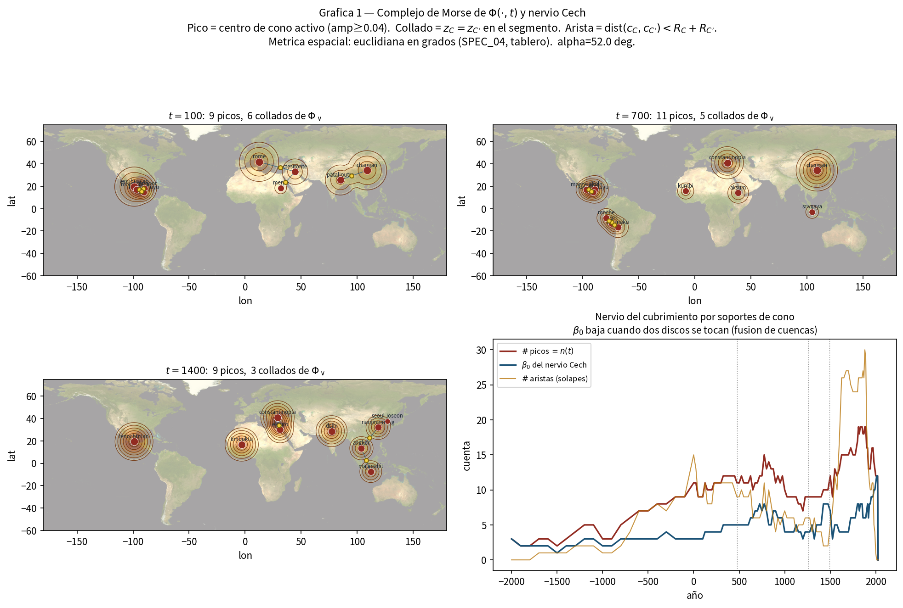
Figura 1. Relieve de influencias en los años 100, 700 y 1400, y
evolución del número de cimas, de cruces entre discos y de cuencas
separadas. Un punto dorado es un collado: dos conos se tocan.
Se lee de izquierda a derecha y de arriba abajo. Arriba hay tres
mapas del mismo relieve en tres fechas. Abajo, tres series: cuántas
cimas hay, cuántos toques entre discos, cuántas manchas separadas. Una
cima es una polidad que en ese año tiene masa suficiente para alzar la
sábana. Un collado es el puerto geométrico: dos radios se tocan. Una
cuenca separada es un mundo que, en ese corte, no se toca con los
otros.
En el año 100 hay nueve cimas y seis collados. El Altiplano
—Teotihuacan, El Mirador, Monte Albán— forma un sistema. El
Mediterráneo–Próximo Oriente —Roma, Ctesifonte, Meroe— forma otro.
Chang’an y Pataliputra sostienen Asia. África occidental y el norte
europeo no levantan cono. Eso no es vacío histórico. Es vacío de este
relieve: no hay polidad datada con la masa suficiente para alzar la
sábana en esas coordenadas.
En el año 700 Teotihuacan se ha apagado. El Altiplano no desaparece:
cambia de cimas. Tikal, y en los Andes Moche, Tiwanaku y Wari, sostienen
el continente. Constantinopla, Aksum, Kumbi, Chang’an y Srivijaya
componen un mundo viejo ya irreconocible respecto del año 100. Roma de
Occidente no está. La regla del intervalo ha hecho su trabajo.
En el año 1400 el mapa cabe en una frase que ningún manual de «Edad
Media» debería prohibir: Tenochtitlan, Constantinopla, El Cairo,
Tombuctú, Delhi, Nankín, Angkor y Majapahit están vivos a la vez. El
collado entre las cimas del sureste asiático dice, en lenguaje de
relieve, lo que los acoples de difusión y conversión dicen en lenguaje
de crónica: hay un mar interior de formas que no es un imperio.
La serie temporal cuenta otra historia. El número de cimas oscila
entre pocas unidades durante milenios y se dispara después de 1500,
cuando el mallado de conos modernos es más denso y los pasos de año son
más finos. Las cuencas separadas no crecen al mismo ritmo: los discos
empiezan a fundirse. El mundo se vuelve, en este relieve, menos
archipiélago y más red. Parte de esa fusión es la primera globalización.
Parte es que por fin fichamos capitales en todos los continentes a la
vez.
Error prohibido: contar cimas como «progreso». El año 100 no es un
mundo pobre. Es un mundo del que este relieve solo alza nueve
capitales.
Lámina 2. Cuánto dura un poder que tiene fecha
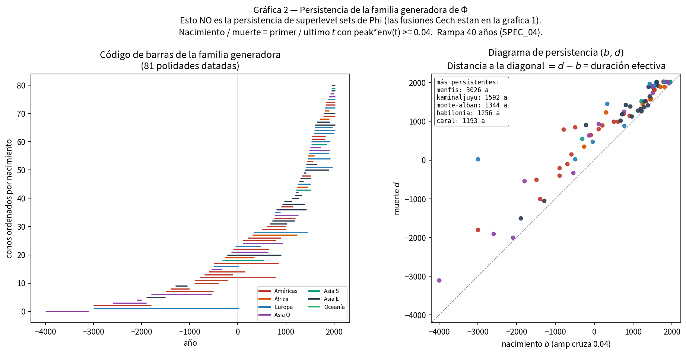
Figura 2. Duración efectiva de las 81 polidades que levantan
cono. Nacimiento y muerte son el primer y el último año en que el cono
tiene masa perceptible. La mediana ronda los cuatro siglos.
A la izquierda, un código de barras: cada raya es una polidad, de su
primer año perceptible a su último. A la derecha, cada punto es
nacimiento contra muerte. La diagonal sería una polidad que nace y muere
el mismo año; nadie vive ahí. Cuanto más abajo y más a la derecha, más
larga la barra.
La mediana es de unos 394 años. Eso está en el orden de lo que un
historiador espera de una formación estatal premoderna que deja capital
y archivo, no de una «civilización milenaria». Los más persistentes de
esta lista —Menfis, Kaminaljuyú, Monte Albán, Babilonia, Caral— delatan,
además, un problema de corte. Menfis a tres mil años no es una polidad:
es una ciudad usada como etiqueta demasiado ancha. Un paper honesto lo
señala para que el próximo taladro parta esa barra en dinastías: Reino
Antiguo, Medio, Nuevo, Saíta, Ptolemaica.
El código de barras, leído de izquierda a derecha, es una historia
del relevo. Asia occidental y el Nilo abren. Las Américas entran con
horizonte propio, no como apéndice. Europa y África al sur del Sáhara
tienen barras más cortas y más tardías en este recorte de 81, porque 81
cimas no son el mundo: son las que el simulador eligió para levantar
relieve. Caral (−3000 a −1800), Uruk (−4000 a −3100) y Mohenjo-Daro
(−2600 a −1900) recuerdan que el Estado no nace en un solo valle.
Error prohibido: leer la barra de Menfis como «Egipto duró tres mil
años y por eso ganó». El archivo no midió duración de una esencia. Midió
un intervalo mal partido.
Lámina 3. Las rutas que el archivo sí documenta
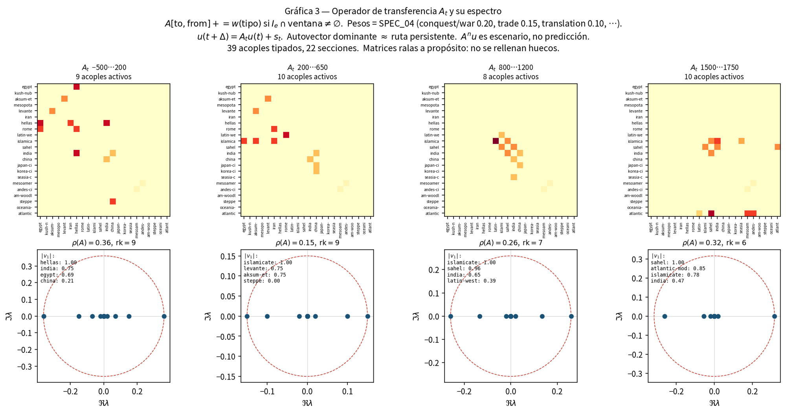
Figura 3. Cruce de secciones por ventanas de siglos. Cada celda
es un acople tipado activo en esa ventana. El vector dominante nombra la
ruta que el archivo sostiene, no la que un modelo desea.
Abu-Lughod reconstruyó un sistema-mundo anterior a 1350 con circuitos
que no pasaban por Lisboa.15 Esta lámina es más
pobre y más honesta: solo pinta los 39 acoples fichados, cortados en
cuatro ventanas. Cada celda oscura es un cruce activo. El vector que se
imprime debajo nombra la combinación de secciones que, en esa ventana,
más empuja.
Entre 500 antes de nuestra era y 200, la ruta que el archivo sostiene
pasa por la Hélade, la India y Egipto: Alejandro, los indo-griegos,
Alejandría, Roma tomando el Mediterráneo. Entre 200 y 650 el centro se
corre hacia el mundo que va a llamarse islamicate, el Levante y Aksum:
el siglo VII no empieza el islam en el vacío; lo hereda de un sistema ya
acoplado. Entre 800 y 1200 la ruta es islamicate–Sahel–India: oro,
canon, traducción, el hajj. Entre 1500 y 1750, Sahel, Atlántico e
islamicate: trata, conquista de México y del Tahuantinsuyu, el Índico
todavía lleno.
Ninguna de esas ventanas tiene un operador denso. El radio de
transferencia es menor que uno: sin fuentes nuevas —un texto, una
capital, una reforma—, el empujón se apaga. Eso, en lenguaje de
historiador, es olvido institucional. Una corte que se quema no deja de
haber existido. Deja de empujar el año siguiente.
Error prohibido: leer el vector de 1500–1750 como «Occidente gana la
historia». El vector incluye al Sahel. El Índico no se ha apagado.
Lisboa entra al esqueleto; no lo reemplaza.
Lámina 4. Cuándo se mueve el mapa
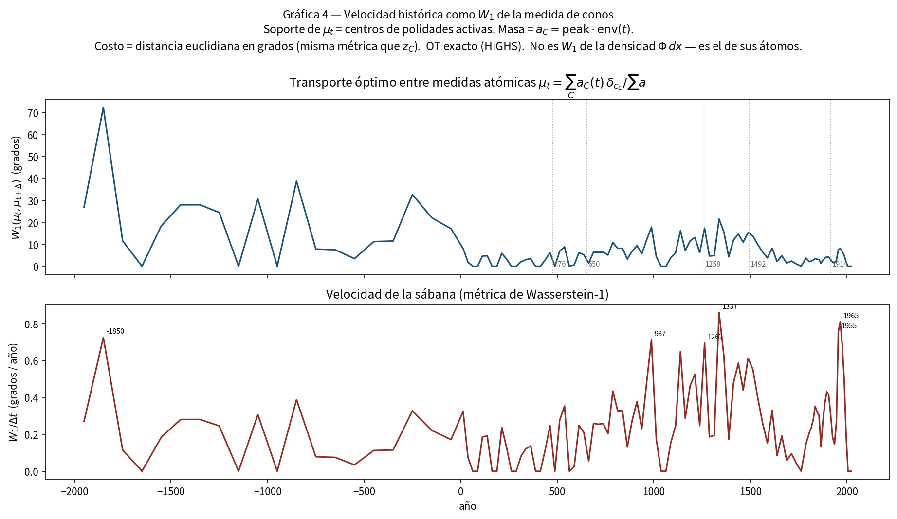
Figura 4. Distancia entre el mapa de un año y el del siguiente, y
esa distancia dividida por los años transcurridos. Los picos son siglos
en los que las capitales activas cambian de lugar o de peso.
La pregunta no es quién manda. Es cuán de prisa cambia el quién. Se
toma el mapa de conos encendidos en un año, el mapa del año siguiente, y
se mide cuánta masa hay que mover para pasar de uno a otro. Arriba, esa
distancia. Abajo, la misma distancia dividida por los años del paso
—porque el mallado no es uniforme: a veces el simulador salta un siglo,
a veces diez años.
Los picos caen hacia 1337, hacia 1262, hacia 987, y otra vez hacia
1955–1965. Los de los siglos XIII y XIV coinciden con lo que la crónica
ya nombra: el relevo en el Altiplano, Delhi, el golpe de 1258 sobre
Bagdad, el Yuan. El de finales del siglo X encaja con un mundo de
capitales que se reordenan —Song, el Califato que ya no es Damasco, el
pulso tolteca—. Los de 1950 son, en parte, recambio real de capitales
modernas y, en parte, un artefacto: el mallado se vuelve de a diez y el
relieve se vuelve más nervioso.
El pico hacia 1850 antes de nuestra era, con pocas cimas encendidas,
debe leerse con desconfianza. Cuando solo hay dos o tres capitales en el
mapa, nacer una en otro continente mueve mucha masa. No es el siglo más
dramático de la humanidad. Es el siglo en el que este relieve todavía es
pobre.
Error prohibido: traducir «velocidad alta» por «progreso» o por
«catástrofe». Es recambio de capitales en el archivo. Una peste que no
mueve capitales no aparece. Una corte que se muda cien kilómetros
sí.
Lámina 5. Cómo se suceden los vecinos
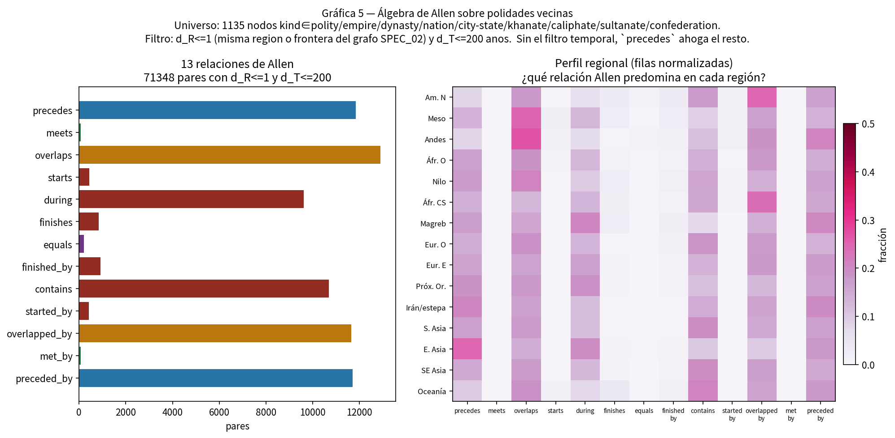
Figura 5. Cómo se relacionan en el tiempo 71 348 pares de
polidades vecinas que no distan más de dos siglos. La moda no es el
relevo limpio: es el solape.
James Allen enumeró trece maneras en que dos intervalos pueden
mirarse: uno precede al otro, lo contiene, lo monta, lo encuentra en el
día exacto, coincide con él.16 Aplicadas a 1 135
polidades vecinas —filtro de región y de no más de dos siglos de
separación—, el resultado es inequívoco. Lo más frecuente es que dos
poderes se monten. El relevo limpio, un año de por medio, es rarísimo:
unas 140 parejas entre más de setenta mil.
Los Andes y Mesoamérica solapan más. Eso encaja con horizontes
arqueológicos que se montan —Formativo, Clásico, horizontes andinos—
mejor que con una lista de reyes que se pasan el cetro. Asia oriental,
en este recuento, precede más: la sucesión dinástica china, tal como el
handbook la ficha, es más lineal. América del Norte aparece con un
perfil de «ser solapada»: formaciones que viven dentro del intervalo de
otras. Oceanía, otra vez, se ve pálida.
Hay 205 pares fichados como iguales y apenas 64 que se encuentran en
el día. El archivo casi no corta las dinastías en el día exacto. La
historia tampoco. 476, 1453, 1521 son excepciones que el relato recuerda
precisamente porque son raros.
Error prohibido: concluir que «en China hay orden y en Mesoamérica
caos». Hay dos tradiciones de fichar. Una prefiere la lista de
dinastías. La otra prefiere el horizonte. El solape mide esas
tradiciones tanto como mide el pasado.
Lámina 6. Seis sábanas en el año mil
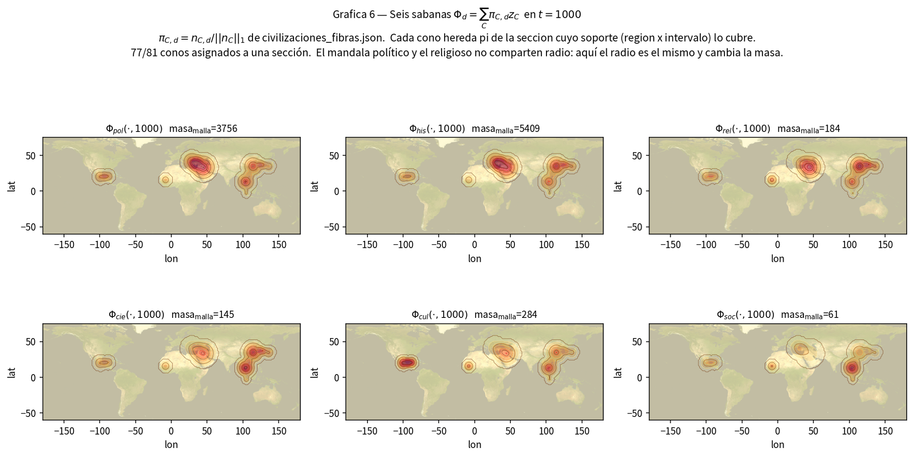
Figura 6. El mismo año mil, cortado por las seis lentes. La forma
se parece porque, hoy, todas comparten el radio del cono político.
Cambia la masa. Esa semejanza es un límite del dibujo, no una tesis
sobre el mundo.
Seis mapas del mismo año. Lo político y lo histórico pesan de más: es
el handbook. Lo cultural tiene masa visible en Mesoamérica. Lo religioso
se ve en el mundo islamicate y en Asia. Lo social es casi un susurro. Lo
científico, otro. Un historiador del año mil no se sorprende. Song, el
mundo chola, el pulso tolteca, los horizontes andinos tardíos y las
cortes del islam no son simétricos en el archivo que hemos heredado.
Hay que decir lo que la figura no logra. El mandala político de una
corte y el mandala de un canon no tienen el mismo radio. Wolters lo
sabía de Ayutthaya y del theravāda. Aquí, por construcción, el radio es
el mismo y solo cambia el peso. La lámina mide, por tanto, un vacío del
modelo tanto como un hecho del siglo. El próximo dibujo honesto es un
radio por lente.
En números de masa sobre la malla, lo histórico pesa más que lo
político, lo cultural más que lo religioso, y lo social y lo científico
quedan por debajo. Esas magnitudes no son «importancia». Son tinta.
Error prohibido: decir que «en el año mil todas las dimensiones
coinciden». Coinciden los radios del lápiz.
Lámina 7. La rejilla del tiempo largo
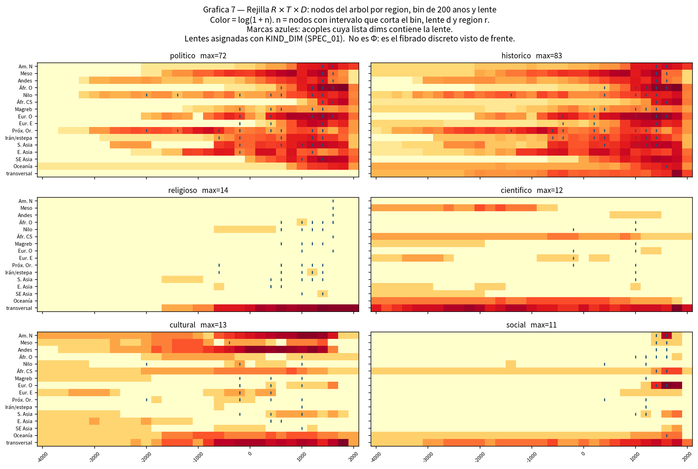
Figura 7. Región, bin de dos siglos y lente. La fila inferior
—transversal— guarda lo que no se clava a un territorio. Las marcas
azules son acoples cuya lente coincide con el panel.
Dieciséis regiones más una fila transversal. Bines de doscientos
años, de −4000 a 2000. Seis paneles, una lente cada uno. El color sigue
la cantidad de fichas. Las cruces azules marcan un acople activo cuya
lente es la del panel.
Leída de izquierda a derecha, cada lámina se oscurece hacia el
presente. Eso no es el auge de la humanidad. Es el auge del papel, de la
epigrafía tardía, del colonialismo que ficha y del propio taladro del
proyecto. El Nilo y el Próximo Oriente encienden pronto lo político.
Mesoamérica y los Andes encienden lo cultural mucho antes de encender un
Estado con la densura de un handbook europeo. Lo religioso y lo
científico viven, sobre todo, en la fila que no tiene patria. Los dioses
y los huesos no respetan las dieciséis regiones del archivo.
Lo social se enciende tarde en Europa occidental y en América del
Norte. El historiador del trabajo y de la diáspora tiene derecho a
protestar: el Sahel y el Índico ya eran sociales. El archivo, en esta
rejilla, los deja más pálidos de lo que los acoples —comercio saheliano,
diáspora, trata— ya documentan. Cuando la figura y la lista de cruces no
dicen lo mismo, se prefiere el cruce tipado a la celda pálida. El hajj
está fichado. La celda social del Sahel en el siglo XIV no debe
contradecirlo; debe ponerse al día.
Error prohibido: leer la fila transversal como «resto del mundo». Es
la fila de lo que el territorio no alcanza a poseer.
Dos figuras de apoyo: dónde está la tinta
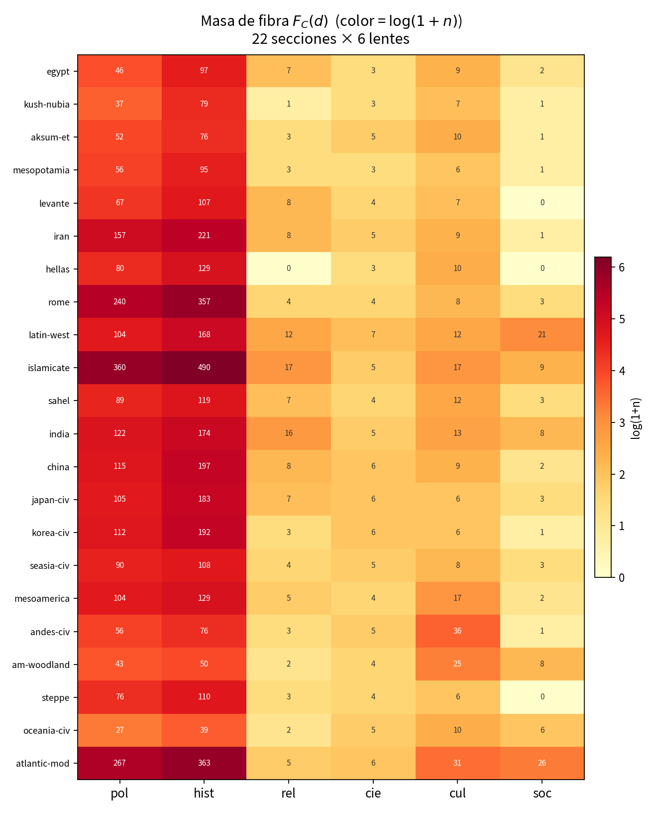
Figura 8. Masa de archivo por sección civilizatoria y lente.
Escala logarítmica. Fuente: civilizaciones_fibras.json, 22
secciones.
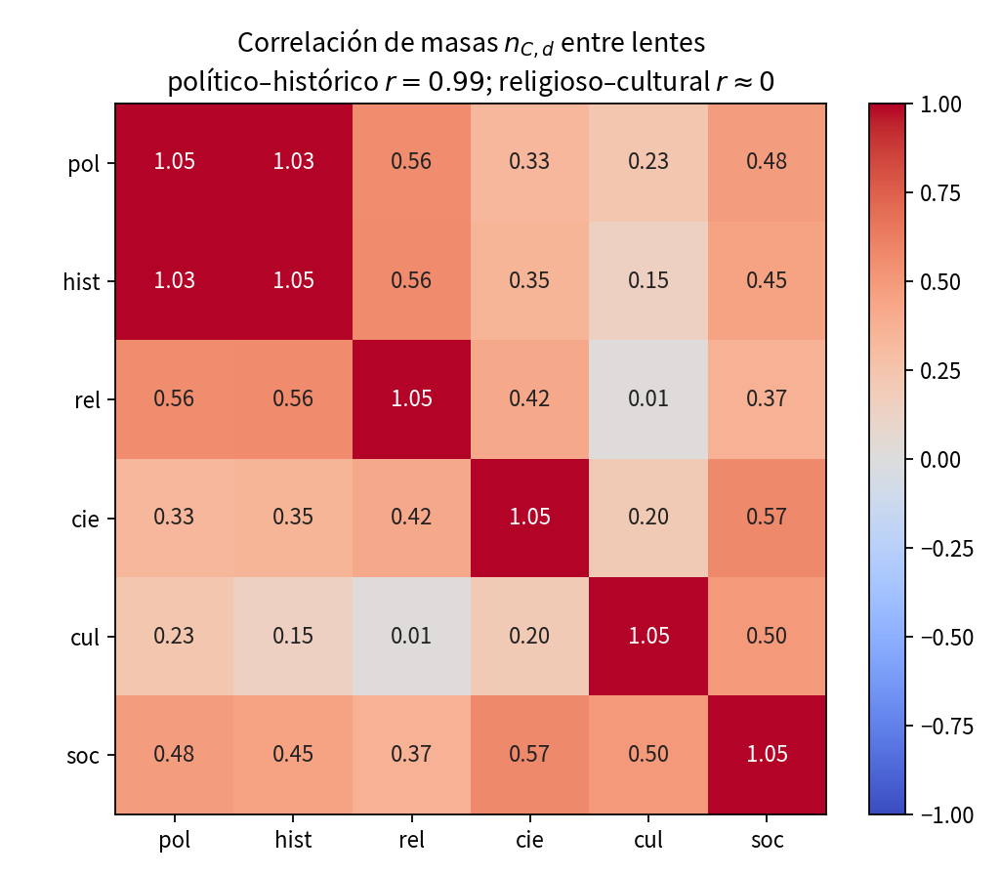
Figura 9. Correlación de las masas de archivo entre lentes, a
través de las 22 secciones.
La figura 8 enseña de un vistazo lo que cada ensayo regional va a
repetir con nombres. La banda izquierda —política e histórica— es casi
toda la tinta. Islamicate, Roma y el Atlántico moderno concentran fichas
porque el corpus se taladró ahí con más densura, y porque esas secciones
cubren muchos siglos y muchos territorios. Oceanía, el woodland
norteamericano y Kush aparecen más pálidos. Eso no autoriza a decir que
hubo menos historia. Autoriza a decir que este archivo, hoy, las conoce
peor.
Hay excepciones que importan. Los Andes tienen una fibra cultural
desproporcionada respecto de su fibra política: 36 contra 56. El
woodland también carga cultura (25) frente a una política más delgada.
El Occidente latino muestra la fibra social más visible de las secciones
preatlánticas (21). La Hélade, en este recuento, tiene cero fichas
religiosas clavadas a la sección: no porque Grecia no tuviera dioses,
sino porque esas fichas viven en el árbol religioso transversal.
La figura 9 es el hallazgo que un historiador puede traducir sin
traicionarlo. Lo político y lo histórico correlacionan cerca de 0,99.
Una sola dimensión principal explica cerca del 99 por ciento de la
varianza de esas masas, y está hecha de política más archivo. Quien
colapse las seis lentes a ese componente no descubre la complejidad:
reproduce el sesgo del handbook. Lo decisivo está en el residual. Lo
religioso y lo cultural correlacionan cerca de cero. Un canon y un
estilo no son la misma fibra. India carga religión; los Andes cargan
cultura. Esa ortogonalidad es el argumento más limpio contra el índice
único.
III. Las veintidós secciones de un vistazo
Antes de los ensayos, la tabla. El intervalo es el soporte de la
sección, no la suma de sus conos. El recuento es masa de archivo, no
poder. Las regiones son las del fibrado, no las de un atlas escolar.
Sección
Intervalo
Regiones
Fichas
Lo que el archivo acentúa
Egipto nilótico
−4000 / 640
Nilo
115
Dinastías; fibra religiosa que no muere en 30 a.C.
Kerma–Kush–Meroe
−2500 / 350
Nilo
88
La otra orilla del mismo río
Aksum / Etiopía
−400 / 1974
Nilo
91
Mar Rojo; continuidad larga
Mesopotamia
−3500 / −539
Próximo Oriente
105
Se apaga cuando entra en Irán
Levante
−3000 / 640
Próximo Oriente
121
Pasillo de casi todos los acoples antiguos
Iranias
−700 / 2026
Irán-estepa + PO
239
De Persépolis a Isfahán
Mundo griego
−1600 / 30
E. oriente/occ. + PO
140
Cero fibra religiosa en la sección
Roma
−753 / 1453
EU, PO, Magreb
370
Dos cortes: 476 y 1453
Occidente latino
476 / 2026
Europa occ.
192
Fibra social más visible
Campo islamicate
622 / 2026
Seis regiones
520
Campo, no Estado
Sahel occidental
−2000 / 1900
África occ.
138
Oro, hajj, trata
Campo índico
−2600 / 2026
Asia meridional
203
Traducción y monzón
Campo sínico
−1600 / 2026
Asia or.
215
Dinastías + difusión al este
Japón
−300 / 2026
Asia or.
199
Recibe; no irradia en este esqueleto
Corea
−700 / 2026
Asia or.
203
Igual: acople de entrada
Mandala SE asiático
−500 / 2026
SE Asia
122
Angkor, Srivijaya, Malaca
Mesoamérica
−2000 / 1697
Meso
149
Relays, no esencia
Andes centrales
−3000 / 1572
Andes
117
Fibra cultural desproporcionada
Bosques orientales NA
−1000 / 1700
Am. Norte
78
Taladro abierto
Estepa euroasiática
−900 / 1758
Irán-estepa
120
Xiongnu, Yuan, Horda
Sahul / Lapita / Polinesia
−65000 / 2026
Oceanía
56
La más pálida; no se rellena
Sistema atlántico moderno
1492 / 1888
Seis regiones
404
Haz colonial, no civilización única
Tabla 1. Las 22 secciones del fibrado. Fuente:
civilizaciones_fibras.json v7.1.0.
IV. Ensayos por civilización
Cada ensayo sigue el mismo orden, a propósito. Primero el suelo.
Después el intervalo y lo que el archivo ficha. Después los conos que
alzan relieve. Después los acoples —de quién depende, a quién empuja,
con quién se monta—. Al final, lo que falta. El lector puede saltar. El
orden no es un ranking.
El Nilo no es un decorado. Es una máquina de crecida, de transporte y
de frontera. El desierto cierra por el oeste y por el este; las
cataratas cierran por el sur; el Delta abre al Levante. Quien controla
la crecida controla el grano; quien controla el grano controla la corte.
Por eso el archivo empieza aquí tan pronto: Naqada, las dos primeras
dinastías, el Reino Antiguo. El cono que el simulador enciende, sin
embargo, es demasiado ancho. Menfis de −3000 a 30 no es una polidad. Es
una etiqueta que traga tres milenios. El historiador debe leer esa barra
como un aviso, no como un hallazgo.
La sección se apaga en 640, con la conquista islámica de 639–642. Ese
corte es político. La nota del propio archivo lo dice: la fibra
religiosa no muere en 30 a.C., cuando Roma se anexa el reino ptolemaico.
Maat, Osiris, el atonismo, los templos de época romana y, más tarde, la
Iglesia copta no caben en la fecha de Actium. Quien enseñe que «Egipto
acaba en Cleopatra» está leyendo solo la lente política.
Los acoples de Egipto son una lección de tipos. Con Mesopotamia,
intercambio por Biblos entre −2500 y −1200: cedro, oro, prestigio, no
anexión. Con el Levante, la guerra de Qadesh (−1274 a −1259) y, el mismo
año de −1259, el tratado. Guerra y tratado no se funden: el archivo los
ficha aparte, porque no son la misma operación. Con la Hélade, fusión en
Alejandría (−280 a −30): la biblioteca no es una conquista. Con Roma,
conquista en −30. Con el campo islamicate, conquista otra vez, 639–642,
ahora también en la lente religiosa.
Geografía de la dependencia. Egipto no puede vivir sin el Levante si
quiere madera y cobre; no puede vivir sin Nubia si quiere oro y, a
ratos, reyes. Kerma y Kush no son un apéndice: son la otra orilla de la
misma máquina fluvial, y el archivo les da sección propia precisamente
para no tragarlas. Aksum, más tarde, mirará al mismo Nilo desde el mar
Rojo.
Lo que falta. El Predinástico está fichado con menos densura que el
Imperio Nuevo. El Egipto copto y el Egipto fatimí no viven en esta
sección: el primero queda a medio camino, el segundo pasa al campo
islamicate. El cono moderno de El Cairo (1805–2026) ya no es «Egipto
nilótico». Es otra franja.
IV.2. Kerma–Kush–Meroe
Soporte −2500 a 350 · Nilo · 88 fichas · fibra religiosa casi
vacía en la sección (1).
De la tercera catarata hacia el sur el Nilo cambia de acento. Kerma
no es una provincia de Menfis. Es una corte con su propia Deffufa, su
propio comercio y, en ciertos siglos, la capacidad de imponer reyes en
Tebas. El archivo reúne Kerma, Kush, Jebel Barkal, Meroe y, más tarde,
las Nubias cristianas —Nobatia, Makuria, Alodia— bajo una sección que se
cierra en 350. Ese cierre es el del cono meroítico (−270 a 350). Las
Nubias cristianas quedan, en la práctica, a caballo con Aksum y con el
Egipto tardío.
La dependencia es simétrica y a menudo violenta. Kush necesita el
norte como mercado y como prestigio; Egipto necesita el sur como oro y
como frontera. La Dinastía XXV kushita en Tebas es el momento en que la
sección «otra orilla» se sienta en el trono de la primera. El archivo no
ficha ese siglo como acople aparte: lo guarda en las fibras políticas de
ambas secciones. Es un hueco del esqueleto de 39, no un hueco de la
historia.
Meroe, el cono visible, mira ya más hacia el mar Rojo que hacia
Menfis. Cuando se apaga, el relieve del Nilo medio no desaparece: cambia
de lengua y de culto. El historiador no debe leer 350 como el fin de
Nubia. Debe leerlo como el fin de este cono.
Lo que falta. Una sola ficha religiosa en la sección es inaceptable
como retrato de Jebel Barkal. Los dioses kushitas viven, otra vez, en el
árbol transversal. Hay que clavarlo.
IV.3. Aksum / Etiopía
Soporte −400 a 1974 · Nilo · 91 fichas · conos Aksum 100–940 y
Addis Abeba 1889–2026.
Aksum no es un Egipto menor. Es un Estado del mar Rojo que habla con
el Levante por Adulis entre 100 y 700, pelea en Ḥimyar entre 518 y 570,
y se convierte al cristianismo en un siglo en el que Constantinopla
todavía es contemporánea. El soporte de la sección llega hasta 1974: el
archivo eligió leer una continuidad larga —aksumita, zagwe, salomónida,
imperio moderno— en lugar de partirla en esencias distintas. Esa es una
decisión historiográfica, no una evidencia de que «Etiopía sea la misma»
durante dos milenios.
Los acoples son dos, y bastan para situarla. Comercio con el Levante:
marfil, oro, esclavos, vino, prestigio. Guerra con el mundo que será
islámico, antes de que ese mundo tenga nombre de campo: la campaña de
Ḥimyar. Cuando el islamicate se constituye, Aksum no entra como
provincia. Queda al lado, cristiana, en las tierras altas. El cono de
Addis Abeba (1889–2026) es el relevo moderno de esa excepción.
Geografía. Las tierras altas cierran. El mar abre. Quien enseñe el
cuerno solo como interior africano pierde Adulis. Quien lo enseñe solo
como Índico pierde el Nilo. La sección está bien clavada en af-nile,
pero su acople verdadero es el agua.
IV.4. Mesopotamia
Soporte −3500 a −539 · Próximo Oriente · 105 fichas · conos Uruk
−4000/−3100, Ur −2100/−2000, Babilonia −1800/−539.
El aluvión del Tigris y del Éufrates no produce un Estado eterno.
Produce una serie de cortes que el archivo se niega a fundir. Uruk abre
el relieve mundial: −4000 a −3100. Ur III dura un siglo justo.
Babilonia, de −1800 a −539, es el cono más largo de la sección y también
el más peligroso: otra etiqueta ancha. Hammurabi, casitas, asirios,
caldeos no son la misma polidad. El próximo taladro debe partirlos.
La sección se apaga en −539 porque el archivo toma una decisión
clara: cuando Ciro entra, Mesopotamia deja de ser soporte propio y pasa
a la sección irania. No es que Babilonia deje de existir como ciudad. Es
que deja de levantar una civilización autonoma en este fibrado. El
acople es de conquista, lente política, un solo año. El cilindro de
Ciro, el mismo año, se ficha además como acople Levante–Irán en lentes
histórica y religiosa. Dos lecturas de la misma fecha, dos aristas.
La dependencia de Mesopotamia es la de un valle sin piedra y sin
madera. Biblos, el Levante, el Zagros, el golfo. El acople con Egipto
por intercambio (−2500 a −1200) es la versión larga de esa necesidad.
Qadesh, más tarde, se pelea al oeste, no aquí; pero el sistema es el
mismo pasillo.
Lo que falta. Asiria imperial no tiene cono propio en los 81. Nínive
se lee hoy como nodo, no como cima del relieve. Es un hueco visible.
IV.5. Levante
Soporte −3000 a 640 · Próximo Oriente · 121 fichas · el
pasillo.
Si una sección mereciera el nombre de puerto permanente, sería esta.
No porque sea la más poderosa —no lo es—, sino porque casi todos los
acoples antiguos la cruzan. Qadesh se pelea aquí y se firma aquí. Ciro
pasa por aquí. Adulis comercia con aquí. Roma la administra. El
islamicate la hereda en 640, y la sección se cierra.
Geografía. Una franja estrecha entre mar y desierto, con un interior
de ciudades-Estado y un litoral que vive de otros valles. Ebla, Ugarit,
Tiro, Jerusalén, Damasco, Antioquía no son un imperio. Son un sistema de
escalas. El archivo las ficha con densura política (67) e histórica
(107) y casi sin fibra social (0). Esa cero es un defecto: el Levante
es, precisamente, sociedad de tránsito.
Cuando la sección se apaga, el suelo no se apaga. Pasa al campo
islamicate y, en parte, a Roma de Oriente hasta 1453. El historiador que
busque Damasco omeya o Jerusalén cruzada no las encontrará bajo
«Levante». Las encontrará bajo otras franjas. Esa es la disciplina del
soporte.
IV.6. Iranias
Soporte −700 a 2026 · Irán-estepa y Próximo Oriente · 239 fichas
· conos Persépolis −550/−330, Ctesifonte −141/637, Isfahán
1501–1736.
Irán, en este archivo, no es una etnia. Es una sección larga que
empieza cuando el handbook reconoce un campo iranio identificable (−700)
y no se cierra. Aqueménidas, partos, sasánidas, dinastías islámicas,
safavíes: la fibra política es la más poblada después del islamicate y
de Roma (157). El riesgo es el de toda sección larga: parecer una
esencia. Los conos impiden esa lectura. Persépolis se apaga en −330.
Ctesifonte vive −141 a 637. Isfahán safaví es otra cima, 1501–1736.
Entre medias hay siglos que el relieve no alza con capital propia.
Los acoples cuentan una biografía de choques. Recibe Mesopotamia y el
Levante en −539. Choca con la Hélade en Gaugamela (−331). Choca con Roma
en Edesa (260). Cae, como campo sasánida, en Qādisiyya–651, y esa caída
es conquista política y religiosa hacia el islamicate. No por ello la
sección muere: el soporte sigue hasta 2026. Lo que muere es un cono.
La estepa no es Irán, y el archivo se lo toma en serio: hay sección
aparte. Pero el suelo se toca. Los partos vienen de ese contacto. Los
mongoles, más tarde, conquistarán Bagdad sin pasar por esta arista
irania. El esqueleto de 39 no ficha un acople Irán–estepa. Otro
hueco.
IV.7. Mundo griego
Soporte −1600 a 30 · Europa oriental, occidental y Próximo
Oriente · 140 fichas · cono Atenas −500/30 · fibra religiosa de sección:
0.
La sección empieza en el Egeo palaciego (−1600) y se cierra en −30,
cuando el último reino helenístico relevante —el Egipto ptolemaico— pasa
a Roma. Ese cierre es político. La fibra cultural no se acaba: el
archivo la deja viajar dentro de Roma, de la India indo-griega y de
Alejandría. Quien busque Bizancio bajo «Hélade» no la encontrará. La
encontrará bajo Roma de Oriente.
Atenas (−500 a 30) es el único cono que el relieve alza con este
nombre. Eso es una pobreza del simulador, no de la historia. Esparta,
Tebas, Pérgamo, Siracusa, Alejandría merecerían cimas. El archivo las
tiene como nodos; el relieve no las enciende. Hay que decirlo.
Los acoples son tres y todos de peso. Recibe la guerra de Gaugamela.
Entrega a Roma la conquista del −146 al −30. Se funde con la India en el
reino indo-griego (−180 a −10) y con Egipto en Alejandría (−280 a −30).
Esas dos fusiones son el argumento más limpio contra la idea de una
Grecia «europea» encerrada en el Egeo. El mundo griego de este archivo
es un campo de koiné que llega al Hindu Kush y al Nilo.
El cero religioso es un defecto de indexación. Zeus no es una
ausencia. Es una ficha que vive en el árbol transversal y no se clavó a
la sección. El ensayo lo declara para que nadie escriba que «los griegos
eran laicos».
IV.8. Roma
Soporte −753 a 1453 · Europa occidental y oriental, Próximo
Oriente, Magreb · 370 fichas · conos Roma −50/476 y Constantinopla
330–1453.
Roma es la sección más densa después del islamicate y del Atlántico
moderno. Cubre cuatro regiones. Tiene dos muertes políticas y ninguna
muerte cultural en la nota del archivo: 476 no acaba la fibra; 1453
acaba el cono de Oriente. Quien enseñe «la caída de Roma» como un solo
acontecimiento está eligiendo Occidente y olvidando que Constantinopla
está encendida en el año 700 y en el 1400.
Los conos lo dicen mejor que el párrafo. Roma-ciudad, −50 a 476.
Constantinopla, 330 a 1453. Hay un siglo de solape, 330–476, en el que
las dos cimas están vivas. Ese solape es el Imperio que ya tiene dos
cabezas. Después, solo una.
Acoples. Recibe Egipto en −30 y la Hélade entre −146 y −30. Choca con
Irán en 260. Entrega Occidente al latino en 476 por sucesión —no por
conquista: el archivo distingue el tipo—. Choca con el islamicate en
1453, guerra y relevo de cúpulas. El Magreb entra en la sección mientras
Roma lo administra y sale cuando el islamicate lo hereda; no hay acople
Roma–Magreb aparte, porque el Magreb no es sección. Es región.
Dependencia. El trigo de África, el oro de Iberia, las legiones del
limes, la koiné griega en Oriente. Roma no es un valle. Es un mar con
caminos. Braudel, leído al revés: el Mediterráneo sostiene a Roma tanto
como Roma nombra al Mediterráneo.
IV.9. Occidente latino
Soporte 476 a 2026 · Europa occidental · 192 fichas · conos
Aquisgrán 768–888, y luego el relevo atlántico.
Nace por sucesión, no por milagro. El acople de 476 es político y
cultural: una corte deja de alzar el cono de Roma-ciudad y otra franja
empieza a contar. Aquisgrán (768–888) es la primera cima propia. Después
el relieve de esta sección se vuelve pálido durante siglos —no porque no
haya reyes, sino porque el simulador no les encendió cono— hasta que
Lisboa (1415–1975), Madrid (1479–1898), París (1589–2026), Londres
(1583–1997), Ámsterdam (1602–1975), Viena (1526–1918) y Berlín
(1871–2026) saturan el mapa. Esa saturación tardía es, otra vez, archivo
y elección de cimas.
Los acoples que importan son cuatro. Sucesión desde Roma. Guerra con
el islamicate, 1096–1291: las cruzadas, lente religiosa e histórica.
Traducción con el mismo islamicate, 1126–1250, vía Ibn Rušd: lentes
científica y cultural. El mismo siglo XII hace las dos cosas. Expansión
hacia el sistema atlántico, 1492–1800. Quien reduzca el Occidente latino
a las cruzadas pierde Toledo. Quien lo reduzca a Toledo pierde
Jerusalén.
La fibra social (21) es la más alta de las secciones que no son el
Atlántico moderno. Aquí viven, en este corpus, formas de trabajo,
órdenes, universidades, y el preludio de la diáspora atlántica. No es
que el Occidente «invente lo social». Es que este archivo lo ficha aquí
con densura.
IV.10. Campo islamicate
Soporte 622 a 2026 · seis regiones · 520 fichas · la sección más
poblada · no es un Estado.
Hodgson inventó la palabra para que no tuviéramos que decir «islam»
cada vez que un sultán acuñaba moneda.17
El archivo la toma al pie de la letra. El campo cubre Próximo Oriente,
Magreb, Irán-estepa, Asia meridional, África occidental y el Nilo. Tiene
360 fichas políticas y 490 históricas. No es una dinastía. Es el suelo
compartido de muchas.
Los conos internos lo confirman. Bagdad abasí, 762–1258. El Cairo
mameluco, 1250–1517. Estambul otomana, 1453–1922. Isfahán está en la
sección irania; Delhi y Agra, en la índica. El campo no exige que cada
capital sea «suya». Exige que el acople se pueda nombrar.
Recibe. Egipto en 639–642. Irán en 636–651. Roma de Oriente en 1453.
La India en una ventana larga, 1206–1526, que no borra la fibra índica.
El sureste asiático por conversión en Malaca, 1400–1511. El Sahel por
comercio, 900–1600, y por el hajj de 1324–1325. Da guerra al Occidente
latino y, el mismo siglo, le da traducción. Un campo que solo conquista,
en este esqueleto, no existiría: también traduce, también comercia,
también recibe a Mansa Musa.
1258 es el año que la lámina 4 registra como sacudida. El acople
estepa → islamicate, vía Bagdad, es de conquista, un solo año, lentes
histórica y política. El campo no se acaba. Se mueve: El Cairo, después
Estambul. Quien enseñe que «los mongoles acaban el islam» está leyendo
un cono como si fuera una civilización.
El riesgo de esta sección es el de su éxito. 520 fichas pueden tragar
al Sahel, a la India y a Al-Ándalus como provincias de una esencia. Los
acoples están puestos para impedirlo. Cada uno tiene tipo e intervalo.
Mali no es una provincia abasí. Delhi no borra Varanasi.
El Sahel no empieza en el tráfico atlántico. Empieza, en este
archivo, dos mil años antes de nuestra era, como franja de sábana y de
comercio entre desierto y bosque. Los conos visibles son más tardíos y
más honestos que el soporte: Wagadu/Ghana en Kumbi, 300–1240; Mali en
Tombuctú, 1235–1460; Songhai en Gao, 1460–1591. El solape
Kumbi–Tombuctú, 1235–1240, es el relevo que las crónicas de al-Bakrī y
de Ibn Jaldūn enseñan a ver. Asante y Sokoto son ya el Sahel que conoce
el Atlántico.
Los acoples son la biografía de una encrucijada. Con el islamicate,
comercio por Awdaghust, 900–1600, lentes social y política: oro, sal,
prestigio, caballos. Con el mismo campo, conversión-hajj en 1324–1325,
lentes religiosa, social e histórica. Con la India, comercio por la
costa suajili, 800–1500, lente social: el monzón no termina en Sofala;
termina, para este archivo, en un Sahel que mira al Índico tanto como al
desierto. Con el Atlántico moderno, trata 1501–1867 y diáspora 1600–1900
vía Candomblé. Esas dos aristas tardías no deben tapar a las tres
primeras.
Geografía. El desierto no es un muro. Es un mar seco con puertos:
Awdaghust, Sijilmasa, Tombuctú. El río Níger hace de Nilo occidental.
Quien pinte el Sahel como interior aislado no ha leído ni el acople ni
la crecida.
Lo que falta. El taladro no ha bajado con la misma densura a los
señoríos que no dejaron crónica árabe. El archivo lo sabe. No se
inventan.
IV.12. Campo índico
Soporte −2600 a 2026 · Asia meridional · 203 fichas · 16
religiosas (la más alta junto al islamicate) · conos Mohenjo-Daro
−2600/−1900, Pataliputra −321/550, Delhi 1206–1526, Agra 1526–1857,
Delhi moderna 1947–2026.
La sección empieza con la llanura del Indo y no se cierra.
Mohenjo-Daro es contemporáneo de Ur y de Caral: el Estado urbano no es
un milagro mesopotámico. Pataliputra (−321 a 550) cubre Maurya y Gupta
con otra etiqueta demasiado ancha. Delhi sultanato (1206–1526) y Agra
mogol (1526–1857) son ya el relevo que el acople con el islamicate
nombra. Delhi 1947–2026 es el Estado-nación. Cinco cimas, cinco
regímenes. No hay «India eterna» que las unifique.
La fibra religiosa (16) es, con la del islamicate (17), la más
poblada de las 22. Veda, śramaṇa, budismo, jainismo, bhakti, islam del
subcontinente: el archivo las guarda como familias, no como un
«hinduismo» eterno. Esa densura explica el acople más largo del
esqueleto: traducción hacia China, 65 a 800, vía el budismo chino. No es
un ejército. Es un canon que viaja.
Hacia el sureste, difusión 802–1431 vía Angkor: religión, cultura y
política. El mandala khmer y el javanés no son colonias. Son el radio de
un modelo de realeza y de un sánscrito de corte. Hacia el Sahel,
comercio suajili 800–1500. Hacia el islamicate, conquista 1206–1526: la
ventana del sultanato. Conquista no es borrado. La fibra índica sigue
fichada hasta 2026.
El acople con la Hélade, la fusión indo-griega (−180 a −10), impide
además la fábula de un subcontinente sellado. Había koiné en Taxila. El
archivo la nombra.
IV.13. Campo sínico
Soporte −1600 a 2026 · Asia oriental · 215 fichas · la sucesión
de capitales más larga del relieve.
Erlitou (−1900 a −1500) y Anyang/Shang (−1300 a −1046) abren. El
soporte de la sección, sin embargo, está declarado desde −1600: el
archivo no da a Erlitou el estatuto pleno de campo sínico, y esa cautela
es correcta. Chang’an (−221 a 907) cubre Qin, Han y Tang con otra
etiqueta ancha. Después el relieve se vuelve honesto porque parte:
Kaifeng 960–1127, Hangzhou 1127–1279, Dadu Yuan 1271–1368, Nankín Ming
1368–1421, Beijing Ming 1421–1644, Beijing Qing 1644–1912, Beijing RPC
1949–2026. Quien recorra esa lista ya ha leído milenios de historia
china sin necesidad de una esencia.
Acoples de salida: difusión del budismo a Corea (300–700) y a Japón
(538–800). Acople de conflicto con la estepa: guerra xiongnu −200 a 100,
conquista yuan 1271–1368. Acople de entrada: traducción desde la India,
65–800. China, en este esqueleto, recibe un canon y entrega un canon.
También recibe jinetes. El archivo distingue al monje del jinete, y el
historiador debe distinguirlos.
La lámina 5 dice que Asia oriental «precede» más que solapa. Es el
efecto de fichar por dinastía. El historiador de los Reinos Combatientes
o de las Cinco Dinastías sabe que el solape existe. El handbook lo
aplana. El ensayo no debe olvidar ese aplanamiento.
IV.14. Japón
Soporte −300 a 2026 · Asia oriental · 199 fichas · conos
Nara/Heian 710–1185, Kamakura 1185–1333, Edo/Tokio 1603–2026.
Japón, en el esqueleto de 39, recibe y no irradia. El único acople es
de entrada: difusión china del budismo, 538–800, lentes religiosa y
cultural. Eso no significa que Japón no emita. Significa que este
archivo aún no ha tipado un acople de salida —hacia Corea, hacia el
Atlántico moderno, hacia China en el siglo XX— con la misma disciplina.
El hueco es del esqueleto, no de 1868 ni de 1941.
Los conos parten mejor que la sección. Nara/Heian junta cuatro siglos
que un historiador partiría. Kamakura es un siglo y medio de bakufu.
Edo/Tokio (1603–2026) vuelve a ser etiqueta ancha: Tokugawa no es la
Restauración, y la Restauración no es 1945. El próximo relieve debe
partir esa barra.
Geografía. Un archipiélago que puede cerrarse —y el bakufu lo hace— y
que nunca está fuera del campo sínico. El mandala aquí no es el de
Wolters; es el de un mar interior con un continente al lado.
IV.15. Corea
Soporte −700 a 2026 · Asia oriental · 203 fichas · conos Goryeo
918–1392 y Seúl Joseon 1392–1897.
Como Japón, Corea recibe. El acople fichado es la difusión budista
desde China, 300–700. El relevo de conos es más limpio que el japonés:
Goryeo se entrega a Joseon en 1392, un año, sin etiqueta de milenio.
1897 cierra Joseon. El siglo XX coreano no tiene cima propia en los 81.
Otro hueco del relieve, no de la historia.
La densidad de fichas (203) es alta para el tamaño del suelo. El
archivo ha taladrado bien las dinastías. Ha taladrado peor las lentes
religiosa (3) y social (1). El budismo que el acople nombra apenas se ve
en la sección. Otra vez, el árbol transversal se ha quedado con los
dioses.
Aquí la palabra mandala no es un adorno. Es el régimen de soberanía
que Wolters describió: un centro cuyo prestigio se diluye hacia la
periferia, sin fronteras westfalianas, con vasallos que pueden mirar a
dos centros a la vez.18 Srivijaya es un mandala del
estrecho. Angkor, de las tierras del Mekong. Majapahit, de Java y de un
mar de islas. El collado de la figura 1 entre esas cimas, en el año
1400, es la traducción cartográfica de ese régimen.
Recibe difusión índica, 802–1431, vía Angkor: religión, cultura,
política. Recibe conversión islamicate, 1400–1511, vía Malaca: religión
y política. No hay acople de conquista mongola que llegue a firmarse
aquí como en Bagdad. No hay, todavía, acople atlántico propio aparte del
contacto que el archivo reserva a Oceanía. Lisboa y Batavia existen; el
esqueleto las deja para el sistema atlántico y para Yakarta 1945.
El año 1400, en esta franja, es el contrario de un «Medievo oscuro».
Angkor todavía respira. Majapahit está vivo. Malaca está a punto de
cambiar de canon. Nankín mira al mismo mar. Quien enseñe 1400 solo con
Agincourt ha apagado este collado a propósito.
IV.17. Mesoamérica
Soporte −2000 a 1697 · meso · 149 fichas · la regla de oro del
relieve.
El contrato del modelo se escribió, en buena medida, para no
traicionar a esta sección.19 San Lorenzo −1400 a
−1000. Chalcatzingo −1500 a −500. La Venta −900 a −400. Cuicuilco −700 a
−100. El Mirador −600 a 150. Kaminaljuyú −800 a 800. Monte Albán −500 a
850. Teotihuacan −100 a 650. Tikal 200–900. Tula 900–1150. Chichén Itzá
750–1200. Tenochtitlan 1325–1521. Cada nombre tiene intervalo. El año
100 no ve a Tenochtitlan. El año 700 no ve a Teotihuacan. El año 1400 sí
ve a Tenochtitlan, y no ve aún a Cortés.
El soporte de la sección empieza en −2000. El árbol plano, en una
reparación de identificadores, perdió nodos arcaicos que el meta decía
haber añadido —Tehuacán, Paso de la Amada, San José Mogote—. El ensayo
no finge que están. Declara el hueco. Mesoamérica, en el archivo de
nodos, empieza más tarde de lo que los conos ya saben.
Acoples. Con los Andes, coexistencia cultural de −2000 a 1521: no hay
conquista panamericana en este esqueleto, y no se inventa. Con el
Atlántico moderno, conquista 1519–1521, vía la caída de Tenochtitlan,
lentes política, histórica y social. El cono virreinal de México
(1535–1821) y el de la ciudad moderna (1821–2026) ya no son esta
sección. El soporte se cierra en 1697, fecha de la última plaza maya
independiente en el handbook que el archivo sigue. Después, el suelo
pasa al haz atlántico y al Estado-nación.
La fibra cultural (17) es alta. Los horizontes —Olmeca, Preclásico
maya, Clásico, Epiclásico, Posclásico— pesan como formas, no solo como
dinastías. Por eso la lámina 5 registra tanto solape. Un horizonte no
releva: se monta.
IV.18. Andes centrales
Soporte −3000 a 1572 · andes · 117 fichas · fibra cultural 36, la
más desproporcionada del corpus.
Caral (−3000 a −1800) abre el relieve americano al mismo tiempo que
Uruk abre el euroasiático. Chavín (−900 a −200), Moche (100–800),
Tiwanaku (500–1000), Wari (600–1000), Cuzco (1438–1572). El Inca no es
el origen. Es un cono tardío y corto. Quien enseñe los Andes como
«imperio inca milenario» está haciendo la misma heráldica que con «los
aztecas desde el Formativo».
La fibra cultural (36) contra la política (56) es el dato que la
figura 8 hace visible. Horizontes, estilos, paquetes agrícolas, caminos
que no son todavía Estado. Rowe y Lumbreras enseñaron a periodizar así.
El archivo los obedece. El solape Tiwanaku–Wari, 600–1000, es el collado
andino por excelencia: dos cimas, un siglo largo de coexistencia,
ninguna necesidad de coronar a una.
Acoples. Coexistencia cultural con Mesoamérica durante tres milenios
y medio. Conquista atlántica por separado, 1532–1572, vía Cajamarca,
distinta de la de Tenochtitlan. El archivo no fabrica un solo «choque de
civilizaciones americano». Fabrica dos caídas, dos fechas, un mismo
tipo. Lima virreinal (1542–1824) ya es otra franja.
Lo que falta. El norte andino —Cañaris, Quito anterior a 1532— y el
sur profundo están menos taladrados. No se rellenan con señoríos de
conveniencia.
IV.19. Bosques orientales de Norteamérica
Soporte −1000 a 1700 · am-north · 78 fichas · 25 culturales, 8
sociales · sin cono en los 81.
Esta es la sección americana que el relieve no alza. No hay cima en
los 81. Hay 78 fichas, con una fibra cultural alta (25) y una social
visible (8). El archivo reconoce Hopewell, Mississippian, los bosques
orientales como campo. No les ha dado capital con radio. Esa ausencia se
declara.
No hay acople fichado que salga o entre aquí. El Atlántico moderno
cubre am-north como región desde 1492, y Washington (1776–2026) es un
cono de otra sección. El woodland, como civilización, se cierra en 1700:
decisión de soporte, no evidencia de que «ya no hay historia». A partir
de ahí el suelo lo lee el haz colonial y la república.
El taladro sigue abierto. Un paper que convirtiera estas 78 fichas en
un imperio del Misisipi estaría inventando lo que el gazetero
prohíbe.
La estepa es el anti-valle. No tiene crecida. Tiene caballo,
distancia y la capacidad de entrar en otras secciones sin quedarse. El
archivo le da soporte desde −900 hasta 1758 —el handbook del fin de los
zúngaros— y un solo cono visible, Karakórum 1206–1260. Esa pobreza de
cimas es engañosa. Los acoples de la estepa son de los más pesados del
esqueleto.
Guerra con China, xiongnu, −200 a 100. Conquista de China, Yuan,
1271–1368. Conquista de Bagdad, 1258. Guerra con el Occidente latino,
Horda de Oro, 1240–1480. En un siglo, la misma sección toca Beijing,
Bagdad y el Vístula. No por ello «la estepa» es un imperio único.
Karakórum se apaga en 1260. Los khanatos que siguen no tienen cima
propia en los 81.
Dependencia. La estepa necesita el grano y el prestigio de los
valles; los valles necesitan no ser invadidos, o serlo en sus propios
términos. El acople no es simétrico: el archivo marca conquista y
guerra, no intercambio. Esa asimetría de tipos es ya una
interpretación.
IV.21. Sahul / Lapita / Polinesia
Soporte −65 000 a 2026 · oceania · 56 fichas · la sección más
pálida · un acople: contacto 1768–1779.
El soporte empieza en el poblamiento de Sahul, no en un Estado. Esa
decisión es la correcta y la más fácil de malentender. −65 000 no es una
dinastía. Es el piso de la capa 0.5 aplicado a una región. Lapita, el
Holoceno australiano, Tasmania, las Marianas, Palau, la Polinesia
profunda: el taladro de agosto de 2026 empezó a bajar hacia los primeros
vestigios y no ha terminado.
El único acople es el contacto con el Atlántico moderno, 1768–1779,
vía los viajes de Cook, lentes histórica y social. No es conquista en
este esqueleto —aunque la conquista llega, y el archivo todavía no la ha
tipado isla por isla—. Contacto es el tipo más débil. El ensayo no lo
infla.
Cincuenta y seis fichas. Un paper que convirtiera ese pálido en
«periferia eterna» estaría haciendo exactamente lo que el gazetero
prohíbe. La ausencia se declara como ausencia. El poblamiento, la
navegación de las velocidades del Pacífico y las cosmologías oceánicas
merecen más tinta. Todavía no la tienen aquí.
IV.22. Sistema atlántico moderno
Soporte 1492 a 1888 · seis regiones · 404 fichas · haz colonial,
no civilización única.
La nota del archivo es la tesis. No es una civilización. Es un haz:
metrópoli, América, trata. El soporte se cierra en 1888, año de la
abolición brasileña en el handbook que se sigue, no porque el Atlántico
se acabe. Los conos, de hecho, siguen: Washington, Río, México moderno,
Lisboa hasta 1975, Londres hasta 1997. El haz, como sección, tiene fecha
de cierre. El mundo que produjo, no.
Acoples de entrada. Expansión desde el Occidente latino, 1492–1800.
Conquista de Mesoamérica, 1519–1521. Conquista de los Andes, 1532–1572.
Trata con el Sahel, 1501–1867. Diáspora religiosa y social con el Sahel,
1600–1900, vía Candomblé. Contacto con Oceanía, 1768–1779. En un siglo y
medio este haz toca cuatro continentes con cuatro tipos distintos. No
son el mismo gesto. El archivo se niega a llamarlos a todos
«descubrimiento».
Los conos del haz son explícitos. Lisboa imperial 1415–1975 —empieza
antes del soporte, porque Ceuta es 1415—. Madrid 1479–1898. México
virreinal 1535–1821. Lima 1542–1824. Ámsterdam/VOC 1602–1975. Londres
1583–1997. París 1589–2026. Y las independencias: Washington 1776,
México 1821, Río 1822. El relieve de 1500–1750 que la lámina 3 llama
«Sahel–Atlántico–islamicate» se lee, desde aquí, como la entrada de este
haz a un esqueleto que ya existía. No como el nacimiento del mundo.
La fibra social (26) es la más alta del corpus. Aquí el archivo sí
ficha trabajo, esclavitud, plantación, abolición. La lámina 7, que deja
pálido al Sahel social, se contradice con esta sección. Se prefiere la
sección.
V. Dependencias, intersecciones, puertos
Una civilización no se entiende sola. Esta parte lee el esqueleto de
39 acoples como un sistema de dependencias: quién necesita a quién,
quién cruza a quién, dónde el archivo reconoce un puerto.
Los tipos no son sinónimos
El archivo distingue, y el historiador debe distinguir. Conquista no
es guerra: la guerra puede no anexar (Qadesh, Edesa, Ḥimyar, xiongnu,
cruzadas, Horda). El tratado no es la guerra que lo precede: Qadesh se
ficha dos veces. La sucesión no es conquista: 476 entrega Occidente sin
que un sultán entre en Rávena. La fusión (Alejandría, indo-griegos) no
es difusión (budismo en Chang’an, en Nara, en Angkor). La conversión
(hajj, Malaca) no es el comercio que a menudo la acompaña (Awdaghust,
suajili). El contacto (Cook) no es la trata. La diáspora (Candomblé) no
es la trata, aunque nazca de ella. La coexistencia (Mesoamérica–Andes)
es el tipo más débil y, aquí, el más largo.
Esa tipología es ya una teoría de la dependencia. Hay dependencias de
recurso (Biblos, Awdaghust), de canon (traducción budista, Ibn Rušd), de
prestigio (el hajj), de coerción (Cajamarca, Tenochtitlan, Qādisiyya),
de relevo institucional (476, 1453). Sumarlas todas como «influencia»
sería volver al índice único por la puerta de atrás.
Tres pasillos y un mar seco
El Próximo Oriente es el pasillo de la Antigüedad: Egipto,
Mesopotamia, Levante, Irán, Hélade, Roma y, al fin, el islamicate se
suceden sobre el mismo suelo. El Nilo es el pasillo africano: Egipto,
Kush, Aksum, y el islamicate que los hereda por el norte. El monzón es
el pasillo del océano Índico: India, Sahel suajili, sureste asiático,
China por el canon. El Sáhara es un mar seco con los mismos oficios que
un océano: puertos, monzones de caravana, naufragios de Estados.
El Atlántico, desde 1492, no reemplaza esos pasillos. Se les suma.
Abu-Lughod tiene razón en lo que este esqueleto alcanza a mostrar: 1258
y 1340 duelen en Bagdad y en el Índico antes de que Lisboa pese. El
vector de 1500–1750 incluye al Sahel, no lo borra.
Puertos
Un puerto, en este ensayo, es un nodo o un collado que dos secciones
pueden reclamar. Alejandría es Egipto, Hélade y Roma. Malaca es el
mandala y el islamicate. Tombuctú es el Sahel y el campo de Mansa Musa.
Chang’an es China y el canon índico. Constantinopla es Roma y, en 1453,
el islamicate. El Altiplano, cuando Teotihuacan y Monte Albán se tocan,
es un puerto interno de Mesoamérica.
Hay que distinguir el puerto geográfico del eje transversal mal
clavado. Más de mil nodos caen en dos o más civilizaciones, pero una
parte son etiquetas de aparato —el eje científico, la escritura como
técnica—. El puerto que importa al relato es el otro: la ciudad, el
tratado, la caída, el templo. Hasta que el índice separe esas dos
familias, el historiador usa los 39 acoples nominados antes que el
conteo crudo de pertenencias.
Lo que el esqueleto no une
No hay acople fichado entre Mesoamérica y cualquier sección del mundo
viejo antes de 1519. Eso no prueba aislamiento absoluto —el debate de
contactos precolombinos sigue abierto en la capa 0.5 y no se cierra
aquí—. Prueba que este archivo no lo tipa. No hay acople Kush–Egipto
pese a la Dinastía XXV. No hay acople Irán–estepa. No hay acople
Japón–Atlántico. No hay acople woodland–Atlántico. Esas ausencias son
programa de trabajo.
De 231 pares posibles, 197 están vacíos. El mundo no está vacío. El
esqueleto sí. Un modelo que rellenara esos 197 con «contacto» genérico
dejaría de ser este modelo.
VI. Lo que este análisis no puede decir
No puede decir hacia dónde va la humanidad. Un escenario bajo reglas
constantes deja de valer en 476, en 650, en 1258, en 1492, en 1914. El
archivo reconstruye inercias. No profetiza.
No puede decir que una dimensión gane. Quien sume las seis con pesos
iguales está eligiendo una política de la mirada. Quien se quede con la
más llena está eligiendo otra. El proyecto publica el vector y se niega
a coronar.
No puede cerrar los debates que marca como abiertos: el estatuto de
Sahelanthropus, la relación entre habilis, rudolfensis y erectus,
Shangchen a 2,1 millones de años, la geografía de los dos stems
africanos, la fecha alta o baja de Sahul y del poblamiento americano, la
cara fósil de los denisovanos.20 Esos huecos se modelan
como disputa. No se rellenan.
No cubre por igual las dieciséis regiones. El Magreb pre-cartaginés,
el centro-sur africano, Europa oriental profunda y Oceanía siguen más
pálidos que el Nilo, el Próximo Oriente y el Mediterráneo. Un handbook
no se inventa por simetría.
No mide poder. Mide archivo. Un imperio analfabeto y un templo que
copia manuscritos no pesan igual en este corpus, y el mundo no está
obligado a parecerse al corpus.
No ha separado aún, en el dibujo, el radio del canon y el radio de la
corte. La figura 6 lo confiesa. Interpretar esa semejanza de formas como
coincidencia histórica sería leer el límite del lápiz como si fuera el
siglo.
No ha partido todavía las etiquetas anchas: Menfis, Pataliputra,
Chang’an, Nara/Heian, Edo/Tokio. Donde el ensayo las usa, las usa con
reserva.
VII. Conclusión
La humanidad de este archivo no es un protagonista. Es un suelo.
Sobre ese suelo, las civilizaciones no son almas: son franjas de tierra
y de siglos con fibras distintas. Los Estados se encienden y se apagan.
Los dioses y las formas viajan más lejos que los fiscos. Los puertos
—Alejandría, Chang’an, Tombuctú, Malaca, el Altiplano cuando dos cimas
se tocan— son el objeto que un árbol no puede nombrar.
Las siete láminas, leídas juntas, no producen una moral. Producen una
disciplina de la mirada. Cortar el año antes de coronar la época. No
pintar a Teotihuacan en el 700. No llamar Edad Media a Song ni a Mali.
No fundir Ifá con un «animismo». No convertir un taxón en capital. No
vender una proyección como destino. Distinguir el sesgo del papel de la
densidad de las vidas. Distinguir conquista de traducción, y el hajj de
la trata.
Si hay una frase que el relieve sostiene, es esta: en cualquier fecha
en la que el archivo tiene algo que decir, hay más de un mundo
encendido. El oficio consiste en no apagar los otros para que el nuestro
se vea más nítido.
Fuentes y convenciones
Las fechas del corpus son convenciones de handbook, no mediciones
nuevas. La cronología media mesopotámica, el Proyecto Xia-Shang-Zhou,
las periodizaciones de Willey y Phillips, Rowe–Lumbreras y el INAH, y
los volúmenes de Cambridge y de la UNESCO son el piso. UsefulCharts y
similares solo prestaron, en su día, una forma visual; no son autoridad
de fechas.
El recuento es el del 31 de agosto de 2026. Las siete figuras se
calcularon con las reglas publicadas —intervalo cerrado, rampa de
cuarenta años, umbral de masa perceptible, pesos de acople declarados
como elección de escala—. Donde una figura hereda un corte demasiado
largo, el texto lo dice.
La bibliografía puntual va en las notas. No se ha pretendido un
estado de la cuestión de cada región. Se ha pretendido una lectura fiel
de este archivo, con sus huecos a la vista, y una narración lo bastante
larga para que cada sección tenga suelo, fecha, cruce y límite.
MODELO MATEMÁTICO DE LA HUMANIDAD
El relieve de la historia
Guía de lectura de las láminas, civilizaciones y cruces
Tercera redacción. La Parte II enseña cada gráfica como se enseña un
mapa mural: qué pregunta hace, qué es cada eje, cada color y cada
parámetro, cómo se lee un punto, y qué lectura está prohibida.
31 de agosto de 2026 · documento de trabajo
Resumen
Este ensayo lee un archivo mundial de 2 296 nodos, 2 522 fichas, 22
secciones civilizatorias, 39 acoples y 81 conos datados.21
La tesis no cambia: la historia no avanza por un tronco. En un mismo año
hay varios mundos encendidos. Las láminas no son adorno. Son el
instrumento con el que se ve esa simultaneidad. Por eso esta redacción
dedica la parte más larga a explicarlas en lenguaje llano.
Cada gráfica responde a una sola pregunta de historiador. ¿Quién está
vivo a la vez? ¿Cuánto dura un poder con fecha? ¿Por dónde viaja lo que
viaja? ¿Cuándo se mueve el mapa? ¿Los vecinos se relevos o se montan?
¿El año mil pesa igual en lo sagrado y en lo fiscal? ¿Qué regiones
encienden qué lentes y en qué siglos? Antes de interpretar hay que saber
qué mide el eje horizontal, qué mide el vertical, qué significa un color
oscuro y qué parámetros —el umbral 0,04, la rampa de 40 años, el ángulo
de 52 grados— deciden si una ciudad aparece o no.
Palabras clave: lectura de gráficas; simultaneidad;
cono datado; sábana de influencia; acople; lentes; sesgo de archivo.
Índice
I. El problema, en una página
Un árbol genealógico de la humanidad obliga a elegir una sola
relación de inclusión. El año 100 no elige: Teotihuacan, Roma, Meroe,
Ctesifonte, Pataliputra y Chang’an están vivos a la vez. El archivo
guarda el hecho una vez y lo corta por seis lecturas —lentes—: qué
ocurrió según fuente pública, qué data un método, qué afirma una
comunidad sobre lo sagrado, qué formas se transmiten, quién organiza a
quién, qué polidad sostiene el territorio.
Una civilización no es un nombre eterno. Es una franja de suelo y de
siglos más las fibras que en esa franja se pueden leer. Un cono de
influencia dura exactamente el intervalo de la polidad. Teotihuacan no
está encendida en 700. Tenochtitlan no lo está en 100.22
No hay una distancia única entre dos hechos: tiempo, región y lente no
se suman sin declarar la suma.
II. Cómo se lee cada gráfica
Esta parte está escrita para un lector que no tiene por qué saber qué
es un autovalor ni un transporte óptimo. Primero, un glosario de las
palabras que se repiten. Después, lámina por lámina: pregunta, paneles,
ejes, colores, parámetros, un ejemplo y la lectura prohibida.
II.0. Glosario del relieve (sin fórmulas)
Cono
Imagine una capital con fecha de inicio y de fin —Tenochtitlan, 1325
a 1521— que «alza» un cerro sobre el mapa. La cima del cerro está en la
ciudad. Las laderas bajan hasta un radio. Fuera de ese círculo, esa
capital no cuenta. El cerro solo existe entre esas dos fechas. Antes de
1325 y después de 1521 el cerro de Tenochtitlan vale cero. Eso es un
cono. Hay 81 en estas láminas. No son las 22 civilizaciones: son
polidades concretas. San Lorenzo no es Teotihuacan. Teotihuacan no es
Tula. Tula no es Tenochtitlan.
Sábana
Si en un mismo año hay varios cerros, el paisaje que resulta de
sumarlos es la sábana. Donde dos cerros se montan, el terreno sube: ahí
hay un puerto. Donde no hay cerro, la sábana está plana. Las curvas de
nivel de la figura 6 son las «curvas de altura» de esa sábana, como en
un mapa topográfico de montaña.
Amplitud, umbral 0,04 y rampa de 40
años
Cada cono tiene una fuerza en cada año. Esa fuerza no pasa de
encendida a apagada de un día para otro: sube durante unos 40 años al
nacer la polidad y baja durante unos 40 al morir. Llamamos a esa subida
y bajada rampa. El umbral 0,04 es la marca de «se ve». Si la fuerza del
cono en un año queda por debajo de 0,04, esa capital no aparece como
cima en la figura 1 ni como barra viva en la figura 2. No significa que
la ciudad no existiera. Significa que, con esta regla, no levanta
relieve.
Ángulo de 52 grados y radio
El cerro no es un pilar. Se abre hacia abajo con un ángulo fijo de 52
grados. A más alto el cerro, más ancho el círculo en el suelo. El radio,
en estas láminas, se mide en grados de mapa (longitud y latitud tratadas
como un tablero plano, no como esfera). Un grado son unos 111 kilómetros
en el ecuador; más cerca de los polos, menos. La regla es
deliberadamente tosca: sirve para ver si dos capitales se tocan, no para
medir una frontera real.
Lente
Una pregunta que se le hace al mismo hecho. Política: ¿qué corte
sostiene el territorio? Histórica: ¿qué quedó en crónica? Religiosa:
¿qué afirma una comunidad sobre lo sagrado? Científica: ¿qué data un
método o una técnica? Cultural: ¿qué forma se transmite? Social: ¿quién
organiza a quién? Un mismo viaje —el hajj de Mansa Musa— puede cortarse
por varias lentes a la vez.
Sección civilizatoria
Una franja: lista de regiones del archivo más un intervalo de siglos.
Egipto es el Nilo de −4000 a 640. El campo islamicate son seis regiones
desde 622. Hay 22. No son continentes y no son Estados.
Acople
Un cruce datado y tipado entre dos secciones: conquista, guerra,
tratado, comercio, traducción, difusión, conversión, diáspora, fusión,
sucesión, contacto, expansión, coexistencia. Hay 39. Cada uno tiene
fechas y lentes. No se inventan cruces para que la red se vea
completa.
Año negativo
En todas las láminas, −2000 es el año 2000 antes de nuestra era. El
archivo usa el año 0. No hay «1 a.C.» separado.
II.1. Gráfica 1 — Quién está vivo a la vez
Figura 1. Tres mapas de un mismo relieve (años 100, 700 y 1400)
y, abajo a la derecha, tres cuentas a lo largo del tiempo.
Qué pregunta hace
En este año, ¿cuántas capitales de nuestro listado de 81 están lo
bastante vivas como para alzar un cerro, cuáles se tocan, y cuántos
mundos separados hay en el mapa?
Qué hay en la lámina
Cuatro recuadros. Tres son mapas del mundo. El cuarto, abajo a la
derecha, es un gráfico de líneas que recorre los siglos. Los mapas son
fotografías del relieve en tres fechas fijas: 100, 700 y 1400. El
gráfico de líneas es la película: de −2000 a 2000.
Los mapas: ejes, círculos y puntos
Eje horizontal (lon). Longitud. −150 está en el
Pacífico, 0 cerca de Greenwich, +100 en Asia oriental. Es el
«este-oeste» del mapa.
Eje vertical (lat). Latitud. +60 es el norte de
Europa y Canadá; 0 es el ecuador; −40 es el sur de África y de
Australia.
Círculos concéntricos color ladrillo. El radio del
cono en ese año. Varios anillos no son varias ciudades: son la misma
capital dibujada por capas, como las curvas de un cerro. Cuanto más
anillo, más lejos llega esa corte ese año.
Punto rojo oscuro. La cima: el centro de una capital
que en ese año supera el umbral 0,04. El título del mapa dice cuántas
hay: «9 picos» en el año 100, «11 picos» en el 700, «9 picos» en el
1400.
Punto dorado. Un collado. Dos cerros se tocan: la
distancia entre las dos capitales es menor que la suma de sus radios. En
lenguaje de historiador: esas dos cortes, ese año, tienen un puerto
geométrico. No prueba que hubiera un tratado. Prueba que, con esta regla
de radio, sus áreas de influencia se montan.
Nombre junto al punto. La etiqueta del cono: rome,
changan, tenochtitlan, timbuktu. Son los identificadores del archivo, no
una jerarquía.
El gráfico de la derecha: tres líneas
Eje horizontal. El año, de −2000 a 2000. Las rayas
verticales de puntos marcan siglos de referencia (alrededor de 500,
1000, 1500).
Eje vertical (cuenta). Un número entero: cuántas
cosas hay. No es un porcentaje ni una distancia. Es un recuento.
Línea roja. Cuántas cimas hay ese año. Sube cuando
nace una capital con masa suficiente; baja cuando una se apaga.
Línea dorada. Cuántos toques hay entre discos. Si
dos radios se montan, hay una «arista». Más aristas = más pares de
capitales que se tocan.
Línea azul. Cuántas manchas separadas quedan cuando
se fusionan los discos que se tocan. El título lo dice: esta cuenta baja
cuando dos discos se tocan, porque dos mundos pasan a ser uno solo en el
mapa. Si hay 11 cimas y solo 4 manchas, varias capitales están agrupadas
en sistemas.
Parámetros que deciden lo que se ve
Umbral 0,04: por debajo, la capital no cuenta como pico. Rampa de 40
años: una polidad no aparece de golpe el año t0 ni desaparece de golpe
el año t1. Ángulo 52°: fija cómo de ancho es el círculo para una altura
dada. Distancia en grados de tablero: dos ciudades se «tocan» si la
distancia en ese tablero es menor que la suma de radios. Cambiar
cualquiera de estos tres números mueve los puntos dorados. Están
declarados para que se puedan cambiar; no son leyes de la
naturaleza.
Cómo se lee, con un ejemplo
Mire el mapa del año 100. En Mesoamérica hay un racimo de círculos
que se tocan: Teotihuacan y sus vecinos del Altiplano y del área maya.
En el Mediterráneo, Roma, Ctesifonte y Meroe forman otro racimo.
Chang’an y Pataliputra están encendidos en Asia. África occidental no
tiene círculo. Eso no dice que el Sahel estuviera vacío en el año 100.
Dice que, entre los 81 conos de este relieve, ninguno alza cerro ahí esa
fecha. Kumbi aparece en el mapa del 700, no en el del 100.
Mire ahora el del 700. Teotihuacan ya no está. Tenochtitlan todavía
no. El Altiplano ha cambiado de cimas. Constantinopla ha sustituido a
Roma-ciudad. Kumbi, Aksum, Chang’an y Srivijaya están encendidos. El año
1400 cabe en una frase: Tenochtitlan, Tombuctú, Constantinopla, El
Cairo, Delhi, Nankín, Angkor y Majapahit vivos a la vez.
Qué no significa
Más cimas no es «más civilización» ni «progreso». Después de 1500 la
línea roja y la dorada se disparan, en parte porque el simulador ficha
más capitales modernas y da pasos de año más finos. El año 100 no es un
mundo pobre: es un mundo del que este relieve solo alza nueve capitales.
Un collado no es una alianza. Un mapa vacío en Australia no es la prueba
de que Sahul no estuviera habitado: Oceanía casi no tiene cono en los
81.
II.2. Gráfica 2 — Cuánto dura un poder que tiene
fecha
Figura 2. A la izquierda, cada raya es una polidad viva entre dos
años. A la derecha, cada punto es esa misma polidad vista como
nacimiento contra muerte.
Qué pregunta hace
De las 81 capitales que alzan relieve, ¿en qué año se vuelven
visibles, en qué año dejan de serlo, y cuántos años hay en medio?
Panel izquierdo: el código de barras
Eje horizontal. El año, de −4000 a +2000. Una raya
que empieza en −3000 y acaba en −1800 cubre ese tramo de siglos.
Eje vertical. No es una magnitud. Es solo el número
de orden de la barra, de 0 a 80, ordenadas por fecha de nacimiento. La
barra de más abajo nace primero; la de más arriba, después. Servir de
estante para no amontonarlas.
Color de la raya. La región gruesa del cono: rojo
Américas, naranja África, azul Europa, violeta Asia occidental, verde
azul Asia meridional, gris Asia oriental, verde Oceanía. Sirve para ver
de un vistazo qué continente entra cuándo, no para medir poder.
Longitud de la raya. La duración efectiva: del
primer año en que la fuerza del cono cruza el umbral 0,04 al último año
en que sigue por encima. No es necesariamente t0–t1 del handbook. Si la
rampa de 40 años deja los bordes por debajo del umbral, la barra es un
poco más corta que el intervalo nominal.
Panel derecho: nacimiento contra muerte
Eje horizontal (nacimiento b). El primer año en que
esa capital se ve. −4000 está a la izquierda; +2000, a la derecha.
Eje vertical (muerte d). El último año en que se ve.
Arriba es «murió hace poco o sigue»; abajo es «murió hace mucho».
La diagonal de puntos. La línea en la que nacimiento
y muerte coinciden: duración cero. Nadie vive sobre esa línea. Cuanto
más se aleja un punto de la diagonal hacia arriba-izquierda, más años
duró.
Un punto. Una polidad. El color sigue el mismo
código de regiones. El recuadro lista las cinco barras más largas y su
duración en años: Menfis 3026, Kaminaljuyú 1592, Monte Albán 1344,
Babilonia 1256, Caral 1193.
Parámetros
Otra vez el umbral 0,04 y la rampa de 40 años. Cambiar el umbral
acorta o alarga todas las barras a la vez. El título de la lámina avisa
algo importante: esto no mide cómo se fusionan las manchas del mapa (eso
era la línea azul de la figura 1). Mide solo cuánto tiempo cada cerro,
por separado, permanece visible.
Cómo se lee
La mediana de esas 81 duraciones ronda los 394 años. Eso parece una
formación estatal premoderna con archivo, no una «civilización
milenaria». Las barras más largas del recuadro son, casi todas,
etiquetas demasiado anchas. Menfis de −3000 a 30 no es una polidad: es
una ciudad usada como nombre de tres milenios. El gráfico no esconde el
defecto. Lo hereda. Un lector honesto parte esa barra en Reino Antiguo,
Medio, Nuevo, Saíta, Ptolemaica antes de contar una gesta.
Leída de izquierda a derecha, la izquierda del código de barras es el
Nilo, Mesopotamia, Caral y el Indo. Las Américas entran con color
propio, no como apéndice. Europa y África al sur del Sáhara tienen
barras más tardías en este recorte porque 81 cimas no son el mundo: son
las que el simulador eligió.
Qué no significa
Una barra larga no es «más grandeza». Puede ser un corte perezoso.
Una barra corta no es fracaso: Cuzco (1438–1572) es corto y densísimo.
Oceanía casi no tiene barras porque casi no tiene conos, no porque no
tenga historia.
II.3. Gráfica 3 — Por dónde viaja lo que viaja
Figura 3. Arriba, cuatro tableros de 22 por 22: quién empuja a
quién en cada ventana de siglos. Abajo, el «retrato» de esa red en un
plano.
Qué pregunta hace
En esta ventana de siglos, ¿qué cruces del archivo están activos, de
qué sección a qué sección, y cuál es la ruta que esa red sostiene con
más fuerza?
Los cuatro tableros de arriba
Filas. La sección que recibe. Egipto está arriba; el
sistema atlántico, abajo. El orden es el de las 22 secciones del
archivo.
Columnas. La sección que emite. La misma lista, de
izquierda a derecha.
Una casilla. El cruce «de la columna hacia la fila».
Si la casilla está en crema claro, no hay acople activo en esa ventana.
Si se oscurece hacia el naranja o el rojo, hay uno o más acoples cuyo
tipo pesa más.
El color. No es un recuento de batallas. Es la suma
de los pesos del tipo de cruce. Esos pesos están declarados de antemano:
una sucesión o una fusión pesan 0,25; una conquista o una guerra, 0,20;
un tratado, 0,20; un comercio o un intercambio, 0,15; una conversión o
una diáspora, 0,12; una traducción o una difusión, 0,10; un contacto o
una expansión, 0,08; una coexistencia, 0,02. Son una regla de escala, no
un dato arqueológico. Se pueden cambiar. Lo que no se puede es pintar
una casilla donde el archivo no tiene cruce.
Las cuatro ventanas. −500 a 200 (9 acoples activos);
200 a 650 (10); 800 a 1200 (8); 1500 a 1750 (10). Una ventana es un
recorte de siglos. Un acople entra en el tablero si su propio intervalo
se solapa con esa ventana.
Los cuatro planos de abajo
Eje horizontal. La parte «real» de cada número
característico de la red. No hace falta saber qué es un autovalor. Basta
esto: cada punto azul es un modo en el que esa red puede empujar.
Eje vertical. La parte «imaginaria». En estas cuatro
ventanas casi todos los puntos caen sobre el eje horizontal: la red no
oscila; empuja o se apaga.
El círculo de puntos rojos. El radio de ese círculo
es ρ, el número que va escrito bajo cada tablero (0,36; 0,15; 0,26;
0,32). Si ρ es menor que 1 —y aquí siempre lo es—, un empujón se apaga
con el tiempo si no llegan fuentes nuevas. En lenguaje de historiador:
una corte que se quema deja de empujar el siglo siguiente. La red no se
sostiene sola.
La lista |v1|. Los nombres de las secciones que más
pesan en la ruta dominante de esa ventana, con un número entre 0 y 1. En
−500 a 200: Hélade 1,00, India 0,75, Egipto 0,69. En 1500 a 1750: Sahel
1,00, Atlántico 0,85, islamicate 0,78. Esa lista no es un ranking de
civilizaciones. Es la combinación de secciones que, con los acoples de
esa ventana, la red sostiene.
rk. Cuántas direcciones independientes tiene esa
red. Nueve, nueve, siete, seis. Son redes ralas: de 231 casillas
posibles, solo unas diez están pintadas.
Cómo se lee
El primer tablero se concentra en el Mediterráneo y el Indo: Hélade,
India, Egipto, Roma. El segundo se corre hacia el mundo que va a
llamarse islamicate, el Levante y Aksum. El tercero es
islamicate–Sahel–India: oro, canon, hajj. El cuarto añade el Atlántico
sin apagar el Sahel. Lisboa entra al esqueleto; no lo reemplaza.
Qué no significa
Una casilla roja no es «más historia». Es un tipo de cruce con un
peso alto en una ventana. Una casilla vacía no prueba que dos mundos no
se tocaran: prueba que este archivo no lo tipó. El vector de 1500–1750
no dice que Occidente gane la historia: el primer nombre de esa lista es
el Sahel. Multiplicar esta red hacia el futuro no es predecir; el
contrato del archivo llama a eso escenario.
II.4. Gráfica 4 — Cuándo se mueve el mapa
Figura 4. Arriba, cuánta masa hay que mover para pasar del mapa
de un año al del siguiente. Abajo, esa misma cantidad dividida por los
años del salto.
Qué pregunta hace
No «quién manda». Sino: de este año al siguiente, ¿cuánto cambia el
lugar y el peso de las capitales encendidas?
Qué se está midiendo, en una analogía
Ponga en el mapa un montón de arena sobre cada capital viva. El
tamaño del montón es la fuerza de esa capital ese año. Al año siguiente
los montones han cambiado de sitio o de tamaño. La pregunta es: ¿cuál es
el trabajo mínimo para llevar la arena de la disposición vieja a la
nueva, pagando el viaje en grados de mapa? Ese trabajo es W₁, la curva
de arriba. Si entre un punto y el siguiente el simulador salta cincuenta
años, hay que dividir por cincuenta para saber cuánto se mueve por año.
Eso es la curva de abajo.
Panel de arriba
Eje horizontal. El año, de −2000 a 2000. Las
etiquetas 476, 650, 1258, 1492, 1914 son anclas de crónica, no picos
calculados.
Eje vertical. W₁ en grados de mapa. Un valor 10
quiere decir que, en promedio ponderado, la «arena» se desplazó unos
diez grados —a grosso modo, unos mil kilómetros en el ecuador— entre un
corte y el siguiente. Un valor 70, a la izquierda, es un salto enorme:
casi siempre, un artefacto de tener muy pocas capitales encendidas.
Panel de abajo
Eje horizontal. El mismo año.
Eje vertical. W₁ dividido por el número de años del
salto, en grados por año. Aquí sí se pueden comparar siglos con pasos
distintos. Un pico de 0,8 grados/año es un recambio rápido de capitales
en este relieve.
Números sobre los picos. El año en el que esa
velocidad local alcanza un máximo visible: −1850, 987, 1262, 1337, 1955,
1965.
Parámetros
La masa de cada capital es su fuerza ese año (altura por rampa). Solo
entran las que están vivas. El costo del viaje es la distancia en el
mismo tablero de grados de la figura 1. No se mide el volumen de la
sábana entera: se miden los puntos —las cimas— como si fueran granos.
Por eso una peste que no mueve capitales no aparece, y una corte que se
muda cien kilómetros sí.
Cómo se lee
Los picos de los siglos XIII y XIV coinciden con lo que la crónica
nombra: relevo en el Altiplano, Delhi, 1258 sobre Bagdad, el Yuan. El de
finales del X encaja con Song, un califato que ya no es Damasco, el
pulso tolteca. Los de 1950 mezclan recambio real de capitales modernas
con un mallado de años más fino, que pone nervioso al gráfico. El pico
de −1850, con pocas cimas encendidas, no es el siglo más dramático de la
humanidad: es el siglo en el que este relieve todavía es pobre. Cuando
solo hay dos montones de arena, nacer un tercero en otro continente
mueve mucha masa.
Qué no significa
Velocidad alta no es progreso ni catástrofe. Es recambio de capitales
fichadas. Velocidad baja no es paz: puede ser que las mismas cortes
sigan en el mismo sitio mientras una guerra no cambia el cono.
II.5. Gráfica 5 — Si los vecinos se relevos o se
montan
Figura 5. A la izquierda, cuántos pares de polidades vecinas caen
en cada una de las trece maneras de mirarse en el tiempo. A la derecha,
qué manera predomina en cada región.
Qué pregunta hace
Cuando dos poderes son vecinos en el mapa y no viven a milenios de
distancia, ¿el segundo empieza cuando el primero acaba, o se montan?
Qué es una «relación de Allen», en
castellano
James Allen enumeró trece maneras en que dos intervalos de tiempo
pueden mirarse. No hace falta memorizar los trece nombres. Bastan cuatro
familias. Precede: A acaba antes de que B empiece, con un hueco en
medio. Encuentra (meets): A acaba el mismo año en que B empieza, sin
hueco y sin solape. Solapa (overlaps): A empieza antes, B empieza antes
de que A acabe, B acaba después. Durante / contiene: una vive
enteramente dentro de la otra. Igual: mismas fechas. Cada familia tiene
su espejo (precedida por, encontrada por, solapada por), porque el
archivo mira el par en un sentido y en el otro.
Panel izquierdo
Eje vertical. El nombre de la relación.
Eje horizontal (pares). Cuántos pares de polidades
caen en esa relación. La barra más larga ronda los 13 000 pares
(overlaps). Las más cortas, meets y met_by, no llegan a 150.
Color. Solo agrupa familias: azules para preceder,
dorados para solapar, rojos para contener o estar dentro, verde para el
relevo exacto, violeta para igual.
Panel derecho
Filas. Las regiones del archivo: América del Norte,
Mesoamérica, Andes, África occidental, Nilo, África centro-sur, Magreb,
Europa occidental y oriental, Próximo Oriente, Irán/estepa, Asia
meridional, Asia oriental, sureste asiático, Oceanía.
Columnas. Las mismas trece relaciones, en el mismo
orden.
Color. Fracción de los pares de esa región que caen
en esa relación, de 0 (blanco) a 0,5 (rojo oscuro). Cada fila suma 1: es
un perfil, no un recuento. Un rojo en «overlaps» en los Andes quiere
decir que, entre los pares andinos que pasaron el filtro, el solape es
la manera más frecuente.
Filtros (sin ellos el gráfico miente)
Universo: 1 135 nodos que son polidad, imperio, dinastía, nación,
ciudad-Estado, kanato, califato, sultanato o confederación. No entran
taxones, yacimientos ni migraciones. Vecindad: misma región o región
fronteriza. Tiempo: no se compara una dinastía del tercer milenio con
una república del XIX solo porque compartan valle; el tope es 200 años
de separación. Sin ese tope, «precede» se traga el resto: casi todo lo
antiguo «precede» a casi todo lo moderno, y el gráfico deja de decir
nada.
Cómo se lee
La moda no es el relevo limpio. Es el solape. El encuentro exacto en
el día —meets— es rarísimo. 476, 1453, 1521 se recuerdan porque son
excepciones. Mesoamérica y los Andes tienen el rojo en solapar: encaja
con horizontes arqueológicos que se montan, no con una lista de reyes
que se pasan el cetro. Asia oriental tiene más peso en «precede»: efecto
de fichar por dinastía. América del Norte pesa en «ser solapada».
Oceanía se ve pálida porque hay pocos pares.
Qué no significa
No prueba que «en China hay orden y en Mesoamérica caos». Prueba que
dos tradiciones de fichar —lista dinástica frente a horizonte— producen
perfiles distintos. Tampoco mide paz ni guerra: un solape puede ser
coexistencia o puede ser dos cortes que se pelean el mismo valle.
II.6. Gráfica 6 — El año mil, cortado en seis
preguntas
Figura 6. Seis mapas del mismo año 1000. Cambia la pregunta (la
lente). El contorno se parece porque, hoy, todas comparten el radio del
cono político.
Qué pregunta hace
Si congelamos el año 1000 y preguntamos por separado lo político, lo
histórico, lo religioso, lo científico, lo cultural y lo social, ¿dónde
se alza la sábana y cuánta tinta hay en cada pregunta?
Cada mapa pequeño
Ejes. Otra vez longitud y latitud, el mismo tablero
de la figura 1.
Las manchas con curvas. La sábana de esa lente en el
año 1000. El centro más oscuro es donde esa pregunta pesa más. Las
curvas son niveles de la misma altura, como en un mapa de montaña.
masa_malla. Un número en el título de cada mapa:
3756 político, 5409 histórico, 184 religioso, 145 científico, 284
cultural, 61 social. Es la suma de la sábana sobre la malla del mapa, no
un recuento de fichas y no un índice de «importancia». Sirve para
comparar los seis recuadros entre sí. Lo histórico pesa más que lo
político porque el handbook ficha más crónica que corte. Lo social, en
el año 1000, es un susurro en este archivo.
Cómo se construye cada mancha (en
palabras)
Cada capital viva en el año 1000 hereda un «reparto» de su sección:
qué fracción de las fichas de esa sección es política, religiosa,
cultural, etc. Ese reparto multiplica la altura del cerro. Por eso una
sección como los Andes, rica en fichas culturales, alza más la sábana
cultural que la social. Setenta y siete de los 81 conos pudieron
asignarse a una sección; cuatro quedaron fuera de este dibujo.
Parámetro que el dibujo aún no resuelve
El radio del cerro es el mismo en los seis mapas. Solo cambia la
altura. Wolters sabía que el mandala de una corte y el de un canon no
tienen el mismo alcance.23 Aquí, por
construcción, sí lo tienen. La semejanza de formas es, en parte, el
lápiz. El próximo dibujo honesto es un radio por lente.
Cómo se lee
En el año 1000 el relieve político e histórico se ve sobre todo en el
mundo islamicate y en Asia. Lo cultural asoma con más cuerpo en
Mesoamérica. Lo religioso se ve en el islamicate y en Asia, no como
iglesia única. Lo científico y lo social apenas levantan. Un historiador
del año mil no se sorprende: Song, el mundo chola, el pulso tolteca y
las cortes del islam no son simétricos en el archivo que hemos
heredado.
Qué no significa
No significa que «en el año mil todas las dimensiones coinciden».
Coinciden los radios del lápiz. Tampoco significa que lo social no
existiera: significa que este archivo, en el año 1000, casi no lo ficha.
El hajj de 1324 todavía no ha ocurrido.
II.7. Gráfica 7 — La rejilla del tiempo largo
Figura 7. Seis calendarios. Cada uno es una lente. Filas =
regiones. Columnas = bloques de doscientos años. Color = cuántas fichas.
Rayas azules = un acople de esa lente.
Qué pregunta hace
A lo largo de seis mil años, ¿en qué región y en qué siglos el
archivo tiene tinta de cada lente? ¿Y en qué celdas hay, además, un
cruce tipado?
Cada uno de los seis paneles
Eje horizontal. El año, de −4000 a +2000, partido en
bloques de 200 años. Cada columnita es un bin: −4000 a −3800, −3800 a
−3600, y así. Una ficha entra en un bloque si su intervalo lo corta. Una
dinastía de 150 años puede pintar una sola columnita o dos, según
caiga.
Eje vertical. Dieciséis regiones más una fila
llamada transversal. La transversal no es un continente: es lo que no se
clava a un territorio —buena parte del rito, de la especie, de la
datación—.
Color. Cuántas fichas hay en esa celda, vista en
escala logarítmica: log(1+n). El logaritmo sirve para que una celda con
3 fichas no desaparezca junto a una con 80. Crema es cero o casi cero.
Rojo oscuro es el máximo de ese panel (72 en político, 83 en histórico,
14 en religioso, 12 en científico, 13 en cultural, 11 en social). Cada
panel tiene su propio máximo: no se puede comparar el rojo del panel
político con el rojo del religioso como si fueran la misma tinta.
Raya azul vertical. Un acople cuya lista de lentes
incluye la de ese panel, colocado en el año del acople. El hajj pinta
azul en religioso, social e histórico. Cajamarca pinta azul en político,
histórico y social. Una raya azul sobre una celda pálida es una
advertencia: el cruce está fichado y la celda todavía no se ha puesto al
día.
Cómo se lee
De izquierda a derecha, casi todos los paneles se oscurecen hacia el
presente. Eso no es el auge de la humanidad. Es el auge del papel, de la
epigrafía tardía, del colonialismo que ficha y del propio taladro del
proyecto. El Nilo y el Próximo Oriente encienden pronto lo político.
Mesoamérica y los Andes encienden lo cultural mucho antes de encender un
Estado con la densura de un handbook europeo. Lo religioso y lo
científico viven, sobre todo, en la fila transversal: los dioses y los
huesos no respetan las dieciséis regiones. Lo social se enciende tarde
en Europa occidental y en América del Norte, pese a que los acoples ya
documentan un Sahel social en el siglo XIV. Cuando la figura y la lista
de cruces no dicen lo mismo, se prefiere el cruce.
Qué no significa
La fila transversal no es «el resto del mundo». Es lo que el
territorio no alcanza a poseer. Una celda crema en Oceanía no autoriza a
escribir «sin historia». Autoriza a escribir «este archivo, en esta
lente y en este bloque de doscientos años, no tiene ficha».
II.8. Dos láminas de apoyo: dónde está la tinta
Figura 8. 22 secciones por 6 lentes. El número es el recuento de
fichas. El color es el logaritmo de ese recuento, para que las fibras
delgadas no desaparezcan.
Filas. Las 22 secciones, de Egipto arriba al
Atlántico moderno abajo.
Columnas. Las seis lentes: pol, hist, rel, cie, cul,
soc.
Número dentro de la casilla. Cuántas fichas de esa
sección caen en esa lente. Islamicate histórico = 490. Hélade religiosa
= 0. Andes cultural = 36. Atlántico social = 26.
Color. log(1+n), de 0 (crema) a 6 (rojo casi negro).
Sirve para comparar de un vistazo. No se suman los colores.
Lo que enseña: la tinta está a la izquierda (política e histórica).
Los Andes y el woodland cargan cultura de más respecto de su política.
El Occidente latino y el Atlántico cargan lo social. El cero de la
Hélade en religión no dice que Grecia no tuviera dioses: dice que esas
fichas viven en el árbol transversal y no se clavaron a la sección.
Figura 9. ¿Cuando una sección tiene mucha tinta política, tiene
también mucha religiosa? Cada casilla compara dos lentes a través de las
22 secciones.
Filas y columnas. Las mismas seis lentes.
Número. Una medida de cuán juntas se mueven esas dos
lentes cuando se recorren las 22 secciones. Cerca de 1: si una sección
está llena de una, está llena de la otra. Cerca de 0: no van juntas. El
título resume lo que importa: político e histórico se mueven casi como
una sola tinta (r ≈ 0,99); religioso y cultural, casi no (r ≈ 0).
Color. De azul (van al revés) a rojo (van juntas).
En esta lámina casi no hay azul: ninguna lente se mueve en contra de
otra con fuerza. Hay gris: religioso contra cultural.
Lo que enseña: quien colapse las seis lentes a un solo índice de
«complejidad» está quedándose con la banda política-histórica —la del
handbook— y tirando el residual. Un canon y un estilo no son la misma
fibra. India carga religión; los Andes cargan cultura.
III. Las veintidós secciones y sus cruces
La tabla fija el soporte. Los ensayos, más abajo, ponen suelo, conos,
dependencias y huecos. Los números son masa de archivo, no poder.
Sección
Intervalo
Regiones
Fichas
Acento
Egipto nilótico
−4000 / 640
Nilo
115
Dinastías; rito que no muere en −30
Kerma–Kush–Meroe
−2500 / 350
Nilo
88
La otra orilla
Aksum / Etiopía
−400 / 1974
Nilo
91
Mar Rojo; continuidad larga
Mesopotamia
−3500 / −539
Próx. Oriente
105
Se apaga al entrar en Irán
Levante
−3000 / 640
Próx. Oriente
121
Pasillo de acoples
Iranias
−700 / 2026
Irán + PO
239
De Persépolis a Isfahán
Mundo griego
−1600 / 30
EU + PO
140
Cero rito clavado a la sección
Roma
−753 / 1453
EU, PO, Magreb
370
Dos cortes: 476 y 1453
Occidente latino
476 / 2026
Europa occ.
192
Fibra social visible
Campo islamicate
622 / 2026
Seis regiones
520
Campo, no Estado
Sahel occidental
−2000 / 1900
África occ.
138
Oro, hajj, trata
Campo índico
−2600 / 2026
Asia mer.
203
Traducción y monzón
Campo sínico
−1600 / 2026
Asia or.
215
Dinastías + difusión
Japón
−300 / 2026
Asia or.
199
Recibe; no irradia aquí
Corea
−700 / 2026
Asia or.
203
Acople de entrada
Mandala SE Asia
−500 / 2026
SE Asia
122
Angkor, Srivijaya, Malaca
Mesoamérica
−2000 / 1697
Meso
149
Relays, no esencia
Andes centrales
−3000 / 1572
Andes
117
Cultura desproporcionada
Bosques or. NA
−1000 / 1700
Am. Norte
78
Sin cono en los 81
Estepa
−900 / 1758
Irán-estepa
120
Xiongnu, Yuan, 1258
Sahul / Lapita
−65000 / 2026
Oceanía
56
Pálida; no se rellena
Atlántico moderno
1492 / 1888
Seis regiones
404
Haz colonial, no civilización
Tabla 1. Las 22 secciones. Fuente: civilizaciones_fibras.json
v7.1.0.
El Nilo es una máquina de crecida, transporte y frontera. El archivo
empieza en Naqada y se cierra, como sección, en 639–642. Ese corte es
político. La fibra religiosa no muere en −30, cuando Roma anexa el reino
ptolemaico.
Acoples: intercambio con Mesopotamia por Biblos (−2500 a −1200);
guerra y tratado de Qadesh con el Levante (dos fichas, no una); fusión
con la Hélade en Alejandría (−280 a −30); conquista romana en −30;
conquista islamicate en 639–642. Kush no es un apéndice: es la otra
orilla, con sección propia. El cono de Menfis hay que partirlo en
dinastías antes de leer una gesta de tres mil años.
Kerma no es provincia de Menfis. La Dinastía XXV kushita en Tebas es
el momento en que esta orilla se sienta en el trono de la otra; el
esqueleto de 39 no ficha ese siglo como acople, y ese es un hueco. Una
sola ficha religiosa en la sección no retrata Jebel Barkal: los dioses
están en el árbol transversal. 350 cierra el cono meroítico, no
Nubia.
III.3. Aksum / Etiopía
−400 a 1974 · Nilo · 91 fichas · conos Aksum 100–940 y Addis
1889–2026.
Estado del mar Rojo, no un Egipto menor. Comercia con el Levante por
Adulis (100–700) y pelea en Ḥimyar (518–570) antes de que el islamicate
tenga nombre de campo. El soporte hasta 1974 es una decisión de
continuidad, no la prueba de una esencia. Su acople verdadero es el
agua.
III.4. Mesopotamia
−3500 a −539 · Próximo Oriente · 105 fichas · Uruk, Ur,
Babilonia.
Uruk abre el relieve mundial. La sección se apaga en −539 porque Ciro
la pasa a Irán: conquista política de un año. El cilindro de Ciro, el
mismo año, se ficha además Levante–Irán en lentes histórica y religiosa.
Asiria imperial no tiene cono propio en los 81. Babilonia −1800/−539 es
otra etiqueta ancha.
III.5. Levante
−3000 a 640 · Próximo Oriente · 121 fichas.
El pasillo. Qadesh se pelea y se firma aquí. Ciro pasa. Adulis
comercia. Roma administra. El islamicate hereda en 640 y la sección se
cierra. Cero fibra social clavada: defecto, porque el Levante es
sociedad de tránsito. Damasco omeya ya no vive bajo este nombre.
III.6. Iranias
−700 a 2026 · 239 fichas · Persépolis, Ctesifonte,
Isfahán.
Sección larga, conos distintos. Recibe Mesopotamia y el Levante en
−539. Choca con la Hélade en Gaugamela y con Roma en Edesa. Cae como
campo sasánida en 636–651 hacia el islamicate. No hay acople fichado
Irán–estepa. Otro hueco.
III.7. Mundo griego
−1600 a 30 · 140 fichas · cono Atenas −500/30 · religión de
sección: 0.
El cierre en −30 es político: el último reino helenístico relevante
pasa a Roma. La koiné viaja dentro de Roma, de Alejandría y del reino
indo-griego (−180 a −10). Atenas es el único cono con este nombre:
pobreza del simulador. El cero religioso es indexación, no laicidad.
III.8. Roma
−753 a 1453 · 370 fichas · Roma −50/476 y Constantinopla
330–1453.
Dos muertes políticas, ninguna muerte cultural en la nota del
archivo. Hay un siglo de solape, 330–476, con dos cimas vivas. Recibe
Egipto y la Hélade; choca con Irán; entrega Occidente por sucesión en
476; choca con el islamicate en 1453. Quien enseñe «la caída» como un
solo acontecimiento elige Occidente y apaga el mapa del 700 y del
1400.
III.9. Occidente latino
476 a 2026 · 192 fichas · Aquisgrán 768–888 y el relevo
atlántico.
Nace por sucesión, no por milagro. El mismo siglo XII hace la guerra
al islamicate (1096–1291) y le traduce ciencia (1126–1250, vía Ibn
Rušd). Expande hacia el Atlántico en 1492–1800. La fibra social (21) es
la más alta antes del haz moderno.
III.10. Campo islamicate
622 a 2026 · seis regiones · 520 fichas.
Hodgson inventó la palabra para no decir «islam» cada vez que un
sultán acuñaba moneda.24 Bagdad 762–1258, El Cairo mameluco
1250–1517, Estambul 1453–1922. Recibe Egipto, Irán, Roma de Oriente, la
India en 1206–1526, Malaca en 1400–1511, el Sahel por comercio y por el
hajj. 1258 mueve el campo; no lo acaba. 520 fichas pueden tragar Mali y
Delhi como provincias: los acoples están puestos para impedirlo.
No empieza en el tráfico atlántico. Kumbi 300–1240, Tombuctú
1235–1460, Gao 1460–1591. Comercio con el islamicate por Awdaghust
(900–1600); hajj 1324–1325; comercio suajili con la India (800–1500);
trata 1501–1867 y diáspora vía Candomblé 1600–1900. El desierto es un
mar seco con puertos. Los señoríos sin crónica árabe no se inventan.
III.12. Campo índico
−2600 a 2026 · 203 fichas · 16 religiosas.
Mohenjo-Daro es contemporáneo de Ur y de Caral. Traducción hacia
China 65–800 (canon, no ejército). Difusión hacia el mandala 802–1431.
Conquista islamicate 1206–1526: ventana, no borrado. Fusión indo-griega
−180 a −10. Cinco conos, cinco regímenes. No hay India eterna.
III.13. Campo sínico
−1600 a 2026 · 215 fichas.
Erlitou y Anyang abren. Después el relieve parte de verdad: Kaifeng,
Hangzhou, Dadu, Nankín, Beijing Ming, Qing, RPC. Entrega budismo a Corea
(300–700) y a Japón (538–800). Recibe el canon índico. Guerra xiongnu;
conquista Yuan. El monje y el jinete no son el mismo acople.
III.14–15. Japón y Corea
Japón −300/2026 · Corea −700/2026.
En el esqueleto de 39, ambas reciben y no irradian: difusión budista
desde China. El hueco es del esqueleto (1868, 1941, el siglo XX
coreano), no de la historia. Edo/Tokio 1603–2026 es etiqueta ancha.
Goryeo → Joseon en 1392 es un relevo limpio.
Mandala, en Wolters, es soberanía que se diluye hacia la periferia,
con vasallos que pueden mirar a dos centros.25
El collado de la figura 1 en 1400 entre Angkor y Majapahit es esa
geometría. Recibe lo índico y, por Malaca 1400–1511, la conversión
islamicate. 1400 no es un Medievo oscuro en este mar.
III.17. Mesoamérica
−2000 a 1697 · 149 fichas · la regla de oro del relieve.
San Lorenzo, Chalcatzingo, La Venta, Cuicuilco, El Mirador,
Kaminaljuyú, Monte Albán, Teotihuacan, Tikal, Tula, Chichén,
Tenochtitlan. Cada uno con intervalo. El año 100 no ve a Tenochtitlan;
el 700 no ve a Teotihuacan. Coexistencia cultural con los Andes −2000 a
1521. Conquista atlántica 1519–1521. El árbol plano perdió nodos
arcaicos que el meta decía haber añadido: el hueco se declara.
III.18. Andes centrales
−3000 a 1572 · 117 fichas · cultura 36.
Caral abre con Uruk. Chavín, Moche, Tiwanaku, Wari, Cuzco 1438–1572.
El Inca es un cono tardío y corto. Tiwanaku y Wari se solapan un siglo
largo. Conquista atlántica por separado, 1532–1572. No hay imperio
panamericano en este esqueleto.
III.19. Bosques orientales de Norteamérica
−1000 a 1700 · 78 fichas · sin cono en los 81.
El relieve no las alza. Fibra cultural alta (25). Cero acoples
fichados. Un paper que fabricara un imperio del Misisipi estaría
inventando lo que el gazetero prohíbe.
III.20. Estepa euroasiática
−900 a 1758 · 120 fichas · Karakórum 1206–1260.
Un solo cono visible y los acoples más pesados del esqueleto:
xiongnu, Yuan, Bagdad 1258, Horda de Oro 1240–1480. En un siglo toca
Beijing, Bagdad y el Vístula. No por ello es un imperio único. Karakórum
se apaga en 1260.
III.21. Sahul / Lapita / Polinesia
−65 000 a 2026 · 56 fichas.
El soporte empieza en el poblamiento, no en un Estado. Un acople:
contacto 1768–1779, el tipo más débil. Cincuenta y seis fichas. La
ausencia se declara como ausencia.
III.22. Sistema atlántico moderno
1492 a 1888 · 404 fichas · haz colonial.
No es una civilización. Es metrópoli + América + trata. Recibe
expansión latina, dos conquistas americanas distintas, trata y diáspora
sahelianas, contacto con Oceanía. El vector de 1500–1750 de la figura 3
se lee desde aquí como la entrada de este haz a un esqueleto que ya
existía, no como el nacimiento del mundo. La fibra social (26) es la más
alta del corpus.
IV. Dependencias, en una página
Los tipos no son sinónimos. Conquista no es guerra. El tratado de
Qadesh no es la guerra de Qadesh. 476 es sucesión, no conquista.
Alejandría es fusión. El budismo en Chang’an es difusión. El hajj es
conversión y hecho social. Cook es contacto. Candomblé es diáspora, no
la trata de la que nace. Mesoamérica–Andes es coexistencia, el tipo más
débil y el más largo.
Tres pasillos y un mar seco: el Próximo Oriente de la Antigüedad, el
Nilo africano, el monzón del Índico, el Sáhara como océano de caravanas.
El Atlántico, desde 1492, se les suma.26
No los reemplaza. De 231 pares posibles entre 22 secciones, 197 están
vacíos. El mundo no está vacío. El esqueleto sí.
V. Lo que no se puede decir, y una frase
No se profetiza.27 No se corona una dimensión. No se
cierran Sahelanthropus, Shangchen, Sahul ni pre-Clovis. No se mide
poder: se mide archivo. No se ha partido aún Menfis, Pataliputra,
Chang’an ni Edo. No se ha dado a cada lente su propio radio.
La humanidad de este archivo no es un protagonista. Es un suelo. En
cualquier fecha en la que el archivo tiene algo que decir, hay más de un
mundo encendido. El oficio consiste en no apagar los otros para que el
nuestro se vea más nítido. Las láminas sirven si se leen por el eje, no
por el deseo.